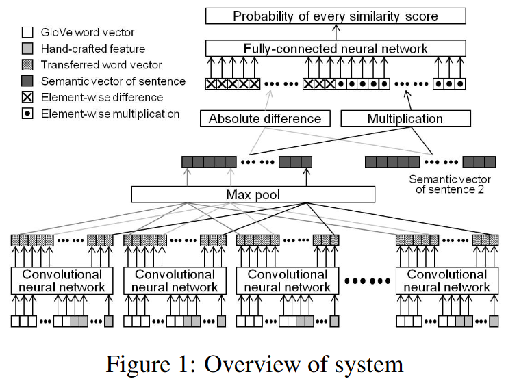

<!DOCTYPE html>
<html class="writer-html5" lang="en" >
<head>
  <meta charset="utf-8" />
  <meta name="viewport" content="width=device-width, initial-scale=1.0" />
  <title>Example: Siamese semantic similarity &mdash; GiaNLP 0.0.1 documentation</title><link rel="stylesheet" href="_static/css/theme.css" type="text/css" />
    <link rel="stylesheet" href="_static/pygments.css" type="text/css" />
      <link rel="stylesheet" href="_static/styles.css" type="text/css" />
  <!--[if lt IE 9]>
    <script src="_static/js/html5shiv.min.js"></script>
  <![endif]-->
  <script id="documentation_options" data-url_root="./" src="_static/documentation_options.js"></script>
        <script src="_static/jquery.js"></script>
        <script src="_static/underscore.js"></script>
        <script src="_static/doctools.js"></script>
        <script src="_static/language_data.js"></script>
    <script src="_static/js/theme.js"></script>
    <link rel="index" title="Index" href="genindex.html" />
    <link rel="search" title="Search" href="search.html" />
    <link rel="next" title="Advanced example: Ner Tagger via BiLSTM-CRF" href="4_ner_tagger.html" />
    <link rel="prev" title="Example: Drug rating regressor tutorial" href="2_drug_rating_regressor.html" /> 
</head>

<body class="wy-body-for-nav"> 
  <div class="wy-grid-for-nav">
    <nav data-toggle="wy-nav-shift" class="wy-nav-side">
      <div class="wy-side-scroll">
        <div class="wy-side-nav-search" >
            <a href="index.html" class="icon icon-home"> GiaNLP
          </a>
              <div class="version">
                0.0.1
              </div>
<div role="search">
  <form id="rtd-search-form" class="wy-form" action="search.html" method="get">
    <input type="text" name="q" placeholder="Search docs" />
    <input type="hidden" name="check_keywords" value="yes" />
    <input type="hidden" name="area" value="default" />
  </form>
</div>
        </div><div class="wy-menu wy-menu-vertical" data-spy="affix" role="navigation" aria-label="Navigation menu">
              <p class="caption"><span class="caption-text">Usage &amp; tutorials:</span></p>
<ul class="current">
<li class="toctree-l1"><a class="reference internal" href="library_usage.html">Library usage tutorial</a></li>
<li class="toctree-l1"><a class="reference internal" href="1_quickstart.html">Quickstart: Binary Classifier Tutorial</a></li>
<li class="toctree-l1"><a class="reference internal" href="2_drug_rating_regressor.html">Example: Drug rating regressor tutorial</a></li>
<li class="toctree-l1 current"><a class="current reference internal" href="#">Example: Siamese semantic similarity</a><ul>
<li class="toctree-l2"><a class="reference internal" href="#model-architecture">Model architecture</a><ul>
<li class="toctree-l3"><a class="reference internal" href="#word-embedding-sequence">Word embedding sequence</a></li>
<li class="toctree-l3"><a class="reference internal" href="#char-per-word-sequence">Char per word sequence</a></li>
<li class="toctree-l3"><a class="reference internal" href="#char-digest">Char digest</a></li>
<li class="toctree-l3"><a class="reference internal" href="#encoder">Encoder</a></li>
<li class="toctree-l3"><a class="reference internal" href="#siamese-architecture">Siamese architecture</a></li>
</ul>
</li>
<li class="toctree-l2"><a class="reference internal" href="#train-test-split-model-build">Train-test split &amp; Model build</a></li>
<li class="toctree-l2"><a class="reference internal" href="#model-train">Model train</a></li>
<li class="toctree-l2"><a class="reference internal" href="#text-embedding">Text embedding</a></li>
<li class="toctree-l2"><a class="reference internal" href="#random-encoder-neighbors">Random encoder neighbors</a></li>
</ul>
</li>
<li class="toctree-l1"><a class="reference internal" href="4_ner_tagger.html">Advanced example: Ner Tagger via BiLSTM-CRF</a></li>
<li class="toctree-l1"><a class="reference internal" href="modules.html">Full API Reference</a></li>
</ul>

        </div>
      </div>
    </nav>

    <section data-toggle="wy-nav-shift" class="wy-nav-content-wrap"><nav class="wy-nav-top" aria-label="Mobile navigation menu" >
          <i data-toggle="wy-nav-top" class="fa fa-bars"></i>
          <a href="index.html">GiaNLP</a>
      </nav>

      <div class="wy-nav-content">
        <div class="rst-content">
          <div role="navigation" aria-label="Page navigation">
  <ul class="wy-breadcrumbs">
      <li><a href="index.html" class="icon icon-home"></a> &raquo;</li>
      <li>Example: Siamese semantic similarity</li>
      <li class="wy-breadcrumbs-aside">
              <a href="https://github.com/jian01/GiaNLP/blob/main/docs/3_siamese_semantic_similarity.md" class="fa fa-github"> Edit on GitHub</a>
      </li>
  </ul>
  <hr/>
</div>
          <div role="main" class="document" itemscope="itemscope" itemtype="http://schema.org/Article">
           <div itemprop="articleBody">
             
  <div class="section" id="example-siamese-semantic-similarity">
<h1>Example: Siamese semantic similarity<a class="headerlink" href="#example-siamese-semantic-similarity" title="Permalink to this headline">¶</a></h1>
<p>We are going to use the siamese semantic similarity dataset used for the task 1 of the semeval 2016. (Agirre, E., Banea, C., Cer, D., Diab, M., Gonzalez Agirre, A., Mihalcea, R., … &amp; Wiebe, J. (2016). Semeval-2016 task 1: Semantic textual similarity, monolingual and cross-lingual evaluation. In SemEval-2016. 10th International Workshop on Semantic Evaluation; 2016 Jun 16-17; San Diego, CA. Stroudsburg (PA): ACL; 2016. p. 497-511.. ACL (Association for Computational Linguistics).)</p>
<p>The model we are going to implement is inspired by the one implemented by the team HTCI in SemEval 2017 competition (Shao, Y. (2017, August). Hcti at semeval-2017 task 1: Use convolutional neural network to evaluate semantic textual similarity. In Proceedings of the 11th International Workshop on Semantic Evaluation (SemEval-2017) (pp. 130-133).)</p>
<div class="highlight-python notranslate"><div class="highlight"><pre><span></span>!curl -OL http://ixa2.si.ehu.es/stswiki/images/4/40/STS2012-en-test.zip
!curl -OL http://ixa2.si.ehu.es/stswiki/images/2/2f/STS2013-en-test.zip
!curl -OL http://ixa2.si.ehu.es/stswiki/images/8/8c/STS2014-en-test.zip
!unzip -o STS2012-en-test.zip
!unzip -o STS2013-en-test.zip
!unzip -o STS2014-en-test.zip
</pre></div>
</div>
<div class="highlight-default notranslate"><div class="highlight"><pre><span></span>  <span class="o">%</span> <span class="n">Total</span>    <span class="o">%</span> <span class="n">Received</span> <span class="o">%</span> <span class="n">Xferd</span>  <span class="n">Average</span> <span class="n">Speed</span>   <span class="n">Time</span>    <span class="n">Time</span>     <span class="n">Time</span>  <span class="n">Current</span>
                                 <span class="n">Dload</span>  <span class="n">Upload</span>   <span class="n">Total</span>   <span class="n">Spent</span>    <span class="n">Left</span>  <span class="n">Speed</span>
  <span class="mi">0</span>   <span class="mi">326</span>    <span class="mi">0</span>     <span class="mi">0</span>    <span class="mi">0</span>     <span class="mi">0</span>      <span class="mi">0</span>      <span class="mi">0</span> <span class="o">--</span><span class="p">:</span><span class="o">--</span><span class="p">:</span><span class="o">--</span> <span class="o">--</span><span class="p">:</span><span class="o">--</span><span class="p">:</span><span class="o">--</span> <span class="o">--</span><span class="p">:</span><span class="o">--</span><span class="p">:</span><span class="o">--</span>     <span class="mi">0</span>
<span class="mi">100</span>  <span class="mi">110</span><span class="n">k</span>  <span class="mi">100</span>  <span class="mi">110</span><span class="n">k</span>    <span class="mi">0</span>     <span class="mi">0</span>  <span class="mi">47158</span>      <span class="mi">0</span>  <span class="mi">0</span><span class="p">:</span><span class="mi">00</span><span class="p">:</span><span class="mi">02</span>  <span class="mi">0</span><span class="p">:</span><span class="mi">00</span><span class="p">:</span><span class="mi">02</span> <span class="o">--</span><span class="p">:</span><span class="o">--</span><span class="p">:</span><span class="o">--</span> <span class="mi">77700</span>
  <span class="o">%</span> <span class="n">Total</span>    <span class="o">%</span> <span class="n">Received</span> <span class="o">%</span> <span class="n">Xferd</span>  <span class="n">Average</span> <span class="n">Speed</span>   <span class="n">Time</span>    <span class="n">Time</span>     <span class="n">Time</span>  <span class="n">Current</span>
                                 <span class="n">Dload</span>  <span class="n">Upload</span>   <span class="n">Total</span>   <span class="n">Spent</span>    <span class="n">Left</span>  <span class="n">Speed</span>
  <span class="mi">0</span>   <span class="mi">326</span>    <span class="mi">0</span>     <span class="mi">0</span>    <span class="mi">0</span>     <span class="mi">0</span>      <span class="mi">0</span>      <span class="mi">0</span> <span class="o">--</span><span class="p">:</span><span class="o">--</span><span class="p">:</span><span class="o">--</span> <span class="o">--</span><span class="p">:</span><span class="o">--</span><span class="p">:</span><span class="o">--</span> <span class="o">--</span><span class="p">:</span><span class="o">--</span><span class="p">:</span><span class="o">--</span>     <span class="mi">0</span>
<span class="mi">100</span> <span class="mi">76462</span>  <span class="mi">100</span> <span class="mi">76462</span>    <span class="mi">0</span>     <span class="mi">0</span>  <span class="mi">40200</span>      <span class="mi">0</span>  <span class="mi">0</span><span class="p">:</span><span class="mi">00</span><span class="p">:</span><span class="mi">01</span>  <span class="mi">0</span><span class="p">:</span><span class="mi">00</span><span class="p">:</span><span class="mi">01</span> <span class="o">--</span><span class="p">:</span><span class="o">--</span><span class="p">:</span><span class="o">--</span>  <span class="mi">104</span><span class="n">k</span>
  <span class="o">%</span> <span class="n">Total</span>    <span class="o">%</span> <span class="n">Received</span> <span class="o">%</span> <span class="n">Xferd</span>  <span class="n">Average</span> <span class="n">Speed</span>   <span class="n">Time</span>    <span class="n">Time</span>     <span class="n">Time</span>  <span class="n">Current</span>
                                 <span class="n">Dload</span>  <span class="n">Upload</span>   <span class="n">Total</span>   <span class="n">Spent</span>    <span class="n">Left</span>  <span class="n">Speed</span>
  <span class="mi">0</span>   <span class="mi">326</span>    <span class="mi">0</span>     <span class="mi">0</span>    <span class="mi">0</span>     <span class="mi">0</span>      <span class="mi">0</span>      <span class="mi">0</span> <span class="o">--</span><span class="p">:</span><span class="o">--</span><span class="p">:</span><span class="o">--</span> <span class="o">--</span><span class="p">:</span><span class="o">--</span><span class="p">:</span><span class="o">--</span> <span class="o">--</span><span class="p">:</span><span class="o">--</span><span class="p">:</span><span class="o">--</span>     <span class="mi">0</span>
<span class="mi">100</span>  <span class="mi">460</span><span class="n">k</span>  <span class="mi">100</span>  <span class="mi">460</span><span class="n">k</span>    <span class="mi">0</span>     <span class="mi">0</span>   <span class="mi">106</span><span class="n">k</span>      <span class="mi">0</span>  <span class="mi">0</span><span class="p">:</span><span class="mi">00</span><span class="p">:</span><span class="mi">04</span>  <span class="mi">0</span><span class="p">:</span><span class="mi">00</span><span class="p">:</span><span class="mi">04</span> <span class="o">--</span><span class="p">:</span><span class="o">--</span><span class="p">:</span><span class="o">--</span>  <span class="mi">148</span><span class="n">k</span>
<span class="n">Archive</span><span class="p">:</span>  <span class="n">STS2012</span><span class="o">-</span><span class="n">en</span><span class="o">-</span><span class="n">test</span><span class="o">.</span><span class="n">zip</span>
  <span class="n">inflating</span><span class="p">:</span> <span class="n">test</span><span class="o">-</span><span class="n">gold</span><span class="o">/</span><span class="mi">00</span><span class="o">-</span><span class="n">readme</span><span class="o">.</span><span class="n">txt</span>
  <span class="n">inflating</span><span class="p">:</span> <span class="n">test</span><span class="o">-</span><span class="n">gold</span><span class="o">/</span><span class="n">STS</span><span class="o">.</span><span class="n">gs</span><span class="o">.</span><span class="n">ALL</span><span class="o">.</span><span class="n">txt</span>
  <span class="n">inflating</span><span class="p">:</span> <span class="n">test</span><span class="o">-</span><span class="n">gold</span><span class="o">/</span><span class="n">STS</span><span class="o">.</span><span class="n">gs</span><span class="o">.</span><span class="n">MSRpar</span><span class="o">.</span><span class="n">txt</span>
  <span class="n">inflating</span><span class="p">:</span> <span class="n">test</span><span class="o">-</span><span class="n">gold</span><span class="o">/</span><span class="n">STS</span><span class="o">.</span><span class="n">gs</span><span class="o">.</span><span class="n">MSRvid</span><span class="o">.</span><span class="n">txt</span>
  <span class="n">inflating</span><span class="p">:</span> <span class="n">test</span><span class="o">-</span><span class="n">gold</span><span class="o">/</span><span class="n">STS</span><span class="o">.</span><span class="n">gs</span><span class="o">.</span><span class="n">SMTeuroparl</span><span class="o">.</span><span class="n">txt</span>
  <span class="n">inflating</span><span class="p">:</span> <span class="n">test</span><span class="o">-</span><span class="n">gold</span><span class="o">/</span><span class="n">STS</span><span class="o">.</span><span class="n">gs</span><span class="o">.</span><span class="n">surprise</span><span class="o">.</span><span class="n">OnWN</span><span class="o">.</span><span class="n">txt</span>
  <span class="n">inflating</span><span class="p">:</span> <span class="n">test</span><span class="o">-</span><span class="n">gold</span><span class="o">/</span><span class="n">STS</span><span class="o">.</span><span class="n">gs</span><span class="o">.</span><span class="n">surprise</span><span class="o">.</span><span class="n">SMTnews</span><span class="o">.</span><span class="n">txt</span>
  <span class="n">inflating</span><span class="p">:</span> <span class="n">test</span><span class="o">-</span><span class="n">gold</span><span class="o">/</span><span class="n">STS</span><span class="o">.</span><span class="n">input</span><span class="o">.</span><span class="n">MSRpar</span><span class="o">.</span><span class="n">txt</span>
  <span class="n">inflating</span><span class="p">:</span> <span class="n">test</span><span class="o">-</span><span class="n">gold</span><span class="o">/</span><span class="n">STS</span><span class="o">.</span><span class="n">input</span><span class="o">.</span><span class="n">MSRvid</span><span class="o">.</span><span class="n">txt</span>
  <span class="n">inflating</span><span class="p">:</span> <span class="n">test</span><span class="o">-</span><span class="n">gold</span><span class="o">/</span><span class="n">STS</span><span class="o">.</span><span class="n">input</span><span class="o">.</span><span class="n">SMTeuroparl</span><span class="o">.</span><span class="n">txt</span>
  <span class="n">inflating</span><span class="p">:</span> <span class="n">test</span><span class="o">-</span><span class="n">gold</span><span class="o">/</span><span class="n">STS</span><span class="o">.</span><span class="n">input</span><span class="o">.</span><span class="n">surprise</span><span class="o">.</span><span class="n">OnWN</span><span class="o">.</span><span class="n">txt</span>
  <span class="n">inflating</span><span class="p">:</span> <span class="n">test</span><span class="o">-</span><span class="n">gold</span><span class="o">/</span><span class="n">STS</span><span class="o">.</span><span class="n">input</span><span class="o">.</span><span class="n">surprise</span><span class="o">.</span><span class="n">SMTnews</span><span class="o">.</span><span class="n">txt</span>
<span class="n">Archive</span><span class="p">:</span>  <span class="n">STS2013</span><span class="o">-</span><span class="n">en</span><span class="o">-</span><span class="n">test</span><span class="o">.</span><span class="n">zip</span>
  <span class="n">inflating</span><span class="p">:</span> <span class="n">test</span><span class="o">-</span><span class="n">gs</span><span class="o">/</span><span class="mi">00</span><span class="o">-</span><span class="n">readme</span><span class="o">.</span><span class="n">txt</span>
  <span class="n">inflating</span><span class="p">:</span> <span class="n">test</span><span class="o">-</span><span class="n">gs</span><span class="o">/</span><span class="n">STS</span><span class="o">.</span><span class="n">gs</span><span class="o">.</span><span class="n">FNWN</span><span class="o">.</span><span class="n">txt</span>
  <span class="n">inflating</span><span class="p">:</span> <span class="n">test</span><span class="o">-</span><span class="n">gs</span><span class="o">/</span><span class="n">STS</span><span class="o">.</span><span class="n">gs</span><span class="o">.</span><span class="n">OnWN</span><span class="o">.</span><span class="n">txt</span>
  <span class="n">inflating</span><span class="p">:</span> <span class="n">test</span><span class="o">-</span><span class="n">gs</span><span class="o">/</span><span class="n">STS</span><span class="o">.</span><span class="n">gs</span><span class="o">.</span><span class="n">SMT</span><span class="o">.</span><span class="n">txt</span>
  <span class="n">inflating</span><span class="p">:</span> <span class="n">test</span><span class="o">-</span><span class="n">gs</span><span class="o">/</span><span class="n">STS</span><span class="o">.</span><span class="n">gs</span><span class="o">.</span><span class="n">headlines</span><span class="o">.</span><span class="n">txt</span>
  <span class="n">inflating</span><span class="p">:</span> <span class="n">test</span><span class="o">-</span><span class="n">gs</span><span class="o">/</span><span class="n">STS</span><span class="o">.</span><span class="n">input</span><span class="o">.</span><span class="n">FNWN</span><span class="o">.</span><span class="n">txt</span>
  <span class="n">inflating</span><span class="p">:</span> <span class="n">test</span><span class="o">-</span><span class="n">gs</span><span class="o">/</span><span class="n">STS</span><span class="o">.</span><span class="n">input</span><span class="o">.</span><span class="n">OnWN</span><span class="o">.</span><span class="n">txt</span>
  <span class="n">inflating</span><span class="p">:</span> <span class="n">test</span><span class="o">-</span><span class="n">gs</span><span class="o">/</span><span class="n">STS</span><span class="o">.</span><span class="n">input</span><span class="o">.</span><span class="n">headlines</span><span class="o">.</span><span class="n">txt</span>
  <span class="n">inflating</span><span class="p">:</span> <span class="n">test</span><span class="o">-</span><span class="n">gs</span><span class="o">/</span><span class="n">STS</span><span class="o">.</span><span class="n">output</span><span class="o">.</span><span class="n">FNWN</span><span class="o">.</span><span class="n">txt</span>
  <span class="n">inflating</span><span class="p">:</span> <span class="n">test</span><span class="o">-</span><span class="n">gs</span><span class="o">/</span><span class="n">STS</span><span class="o">.</span><span class="n">output</span><span class="o">.</span><span class="n">OnWN</span><span class="o">.</span><span class="n">txt</span>
  <span class="n">inflating</span><span class="p">:</span> <span class="n">test</span><span class="o">-</span><span class="n">gs</span><span class="o">/</span><span class="n">STS</span><span class="o">.</span><span class="n">output</span><span class="o">.</span><span class="n">SMT</span><span class="o">.</span><span class="n">txt</span>
  <span class="n">inflating</span><span class="p">:</span> <span class="n">test</span><span class="o">-</span><span class="n">gs</span><span class="o">/</span><span class="n">STS</span><span class="o">.</span><span class="n">output</span><span class="o">.</span><span class="n">headlines</span><span class="o">.</span><span class="n">txt</span>
  <span class="n">inflating</span><span class="p">:</span> <span class="n">test</span><span class="o">-</span><span class="n">gs</span><span class="o">/</span><span class="n">correct</span><span class="o">-</span><span class="n">output</span><span class="o">.</span><span class="n">pl</span>
  <span class="n">inflating</span><span class="p">:</span> <span class="n">test</span><span class="o">-</span><span class="n">gs</span><span class="o">/</span><span class="n">correlation</span><span class="o">-</span><span class="nb">all</span><span class="o">.</span><span class="n">pl</span>
  <span class="n">inflating</span><span class="p">:</span> <span class="n">test</span><span class="o">-</span><span class="n">gs</span><span class="o">/</span><span class="n">correlation</span><span class="o">.</span><span class="n">pl</span>
<span class="n">Archive</span><span class="p">:</span>  <span class="n">STS2014</span><span class="o">-</span><span class="n">en</span><span class="o">-</span><span class="n">test</span><span class="o">.</span><span class="n">zip</span>
  <span class="n">inflating</span><span class="p">:</span> <span class="n">sts</span><span class="o">-</span><span class="n">en</span><span class="o">-</span><span class="n">test</span><span class="o">-</span><span class="n">gs</span><span class="o">-</span><span class="mi">2014</span><span class="o">/</span><span class="n">STS</span><span class="o">.</span><span class="n">input</span><span class="o">.</span><span class="n">deft</span><span class="o">-</span><span class="n">forum</span><span class="o">.</span><span class="n">txt</span>
  <span class="n">inflating</span><span class="p">:</span> <span class="n">sts</span><span class="o">-</span><span class="n">en</span><span class="o">-</span><span class="n">test</span><span class="o">-</span><span class="n">gs</span><span class="o">-</span><span class="mi">2014</span><span class="o">/</span><span class="n">correlation</span><span class="o">-</span><span class="n">noconfidence</span><span class="o">.</span><span class="n">pl</span>
  <span class="n">inflating</span><span class="p">:</span> <span class="n">sts</span><span class="o">-</span><span class="n">en</span><span class="o">-</span><span class="n">test</span><span class="o">-</span><span class="n">gs</span><span class="o">-</span><span class="mi">2014</span><span class="o">/</span><span class="n">STS</span><span class="o">.</span><span class="n">input</span><span class="o">.</span><span class="n">deft</span><span class="o">-</span><span class="n">news</span><span class="o">.</span><span class="n">txt</span>
  <span class="n">inflating</span><span class="p">:</span> <span class="n">sts</span><span class="o">-</span><span class="n">en</span><span class="o">-</span><span class="n">test</span><span class="o">-</span><span class="n">gs</span><span class="o">-</span><span class="mi">2014</span><span class="o">/</span><span class="n">STS</span><span class="o">.</span><span class="n">input</span><span class="o">.</span><span class="n">headlines</span><span class="o">.</span><span class="n">txt</span>
  <span class="n">inflating</span><span class="p">:</span> <span class="n">sts</span><span class="o">-</span><span class="n">en</span><span class="o">-</span><span class="n">test</span><span class="o">-</span><span class="n">gs</span><span class="o">-</span><span class="mi">2014</span><span class="o">/</span><span class="n">STS</span><span class="o">.</span><span class="n">input</span><span class="o">.</span><span class="n">images</span><span class="o">.</span><span class="n">txt</span>
  <span class="n">inflating</span><span class="p">:</span> <span class="n">sts</span><span class="o">-</span><span class="n">en</span><span class="o">-</span><span class="n">test</span><span class="o">-</span><span class="n">gs</span><span class="o">-</span><span class="mi">2014</span><span class="o">/</span><span class="n">STS</span><span class="o">.</span><span class="n">input</span><span class="o">.</span><span class="n">OnWN</span><span class="o">.</span><span class="n">txt</span>
  <span class="n">inflating</span><span class="p">:</span> <span class="n">sts</span><span class="o">-</span><span class="n">en</span><span class="o">-</span><span class="n">test</span><span class="o">-</span><span class="n">gs</span><span class="o">-</span><span class="mi">2014</span><span class="o">/</span><span class="n">STS</span><span class="o">.</span><span class="n">input</span><span class="o">.</span><span class="n">tweet</span><span class="o">-</span><span class="n">news</span><span class="o">.</span><span class="n">txt</span>
  <span class="n">inflating</span><span class="p">:</span> <span class="n">sts</span><span class="o">-</span><span class="n">en</span><span class="o">-</span><span class="n">test</span><span class="o">-</span><span class="n">gs</span><span class="o">-</span><span class="mi">2014</span><span class="o">/</span><span class="n">STS</span><span class="o">.</span><span class="n">output</span><span class="o">.</span><span class="n">headlines</span><span class="o">.</span><span class="n">txt</span>
  <span class="n">inflating</span><span class="p">:</span> <span class="n">sts</span><span class="o">-</span><span class="n">en</span><span class="o">-</span><span class="n">test</span><span class="o">-</span><span class="n">gs</span><span class="o">-</span><span class="mi">2014</span><span class="o">/</span><span class="n">sts2012</span><span class="o">-</span><span class="n">test</span><span class="o">.</span><span class="n">tgz</span>
  <span class="n">inflating</span><span class="p">:</span> <span class="n">sts</span><span class="o">-</span><span class="n">en</span><span class="o">-</span><span class="n">test</span><span class="o">-</span><span class="n">gs</span><span class="o">-</span><span class="mi">2014</span><span class="o">/</span><span class="n">sts2012</span><span class="o">-</span><span class="n">train</span><span class="o">.</span><span class="n">tgz</span>
  <span class="n">inflating</span><span class="p">:</span> <span class="n">sts</span><span class="o">-</span><span class="n">en</span><span class="o">-</span><span class="n">test</span><span class="o">-</span><span class="n">gs</span><span class="o">-</span><span class="mi">2014</span><span class="o">/</span><span class="n">sts2013</span><span class="o">-</span><span class="n">test</span><span class="o">.</span><span class="n">tgz</span>
  <span class="n">inflating</span><span class="p">:</span> <span class="n">sts</span><span class="o">-</span><span class="n">en</span><span class="o">-</span><span class="n">test</span><span class="o">-</span><span class="n">gs</span><span class="o">-</span><span class="mi">2014</span><span class="o">/</span><span class="n">STS</span><span class="o">.</span><span class="n">gs</span><span class="o">.</span><span class="n">deft</span><span class="o">-</span><span class="n">forum</span><span class="o">.</span><span class="n">txt</span>
  <span class="n">inflating</span><span class="p">:</span> <span class="n">sts</span><span class="o">-</span><span class="n">en</span><span class="o">-</span><span class="n">test</span><span class="o">-</span><span class="n">gs</span><span class="o">-</span><span class="mi">2014</span><span class="o">/</span><span class="n">STS</span><span class="o">.</span><span class="n">gs</span><span class="o">.</span><span class="n">deft</span><span class="o">-</span><span class="n">news</span><span class="o">.</span><span class="n">txt</span>
  <span class="n">inflating</span><span class="p">:</span> <span class="n">sts</span><span class="o">-</span><span class="n">en</span><span class="o">-</span><span class="n">test</span><span class="o">-</span><span class="n">gs</span><span class="o">-</span><span class="mi">2014</span><span class="o">/</span><span class="n">STS</span><span class="o">.</span><span class="n">gs</span><span class="o">.</span><span class="n">headlines</span><span class="o">.</span><span class="n">txt</span>
  <span class="n">inflating</span><span class="p">:</span> <span class="n">sts</span><span class="o">-</span><span class="n">en</span><span class="o">-</span><span class="n">test</span><span class="o">-</span><span class="n">gs</span><span class="o">-</span><span class="mi">2014</span><span class="o">/</span><span class="n">STS</span><span class="o">.</span><span class="n">gs</span><span class="o">.</span><span class="n">images</span><span class="o">.</span><span class="n">txt</span>
  <span class="n">inflating</span><span class="p">:</span> <span class="n">sts</span><span class="o">-</span><span class="n">en</span><span class="o">-</span><span class="n">test</span><span class="o">-</span><span class="n">gs</span><span class="o">-</span><span class="mi">2014</span><span class="o">/</span><span class="n">STS</span><span class="o">.</span><span class="n">gs</span><span class="o">.</span><span class="n">OnWN</span><span class="o">.</span><span class="n">txt</span>
  <span class="n">inflating</span><span class="p">:</span> <span class="n">sts</span><span class="o">-</span><span class="n">en</span><span class="o">-</span><span class="n">test</span><span class="o">-</span><span class="n">gs</span><span class="o">-</span><span class="mi">2014</span><span class="o">/</span><span class="n">STS</span><span class="o">.</span><span class="n">gs</span><span class="o">.</span><span class="n">tweet</span><span class="o">-</span><span class="n">news</span><span class="o">.</span><span class="n">txt</span>
  <span class="n">inflating</span><span class="p">:</span> <span class="n">sts</span><span class="o">-</span><span class="n">en</span><span class="o">-</span><span class="n">test</span><span class="o">-</span><span class="n">gs</span><span class="o">-</span><span class="mi">2014</span><span class="o">/</span><span class="mi">00</span><span class="o">-</span><span class="n">readme</span><span class="o">.</span><span class="n">txt</span>
</pre></div>
</div>
<div class="highlight-python notranslate"><div class="highlight"><pre><span></span><span class="kn">import</span> <span class="nn">pandas</span> <span class="k">as</span> <span class="nn">pd</span>
<span class="kn">import</span> <span class="nn">os</span>
</pre></div>
</div>
<div class="highlight-python notranslate"><div class="highlight"><pre><span></span><span class="n">dfs</span> <span class="o">=</span> <span class="p">[]</span>
<span class="k">for</span> <span class="n">filename</span> <span class="ow">in</span> <span class="n">os</span><span class="o">.</span><span class="n">listdir</span><span class="p">(</span><span class="s1">&#39;test-gold&#39;</span><span class="p">):</span>
    <span class="k">if</span> <span class="s1">&#39;input&#39;</span> <span class="ow">in</span> <span class="n">filename</span> <span class="ow">and</span> <span class="n">filename</span><span class="o">.</span><span class="n">replace</span><span class="p">(</span><span class="s1">&#39;input&#39;</span><span class="p">,</span> <span class="s1">&#39;gs&#39;</span><span class="p">)</span> <span class="ow">in</span> <span class="n">os</span><span class="o">.</span><span class="n">listdir</span><span class="p">(</span><span class="s1">&#39;test-gold&#39;</span><span class="p">):</span>
        <span class="n">df</span> <span class="o">=</span> <span class="n">pd</span><span class="o">.</span><span class="n">read_csv</span><span class="p">(</span><span class="s1">&#39;test-gold/&#39;</span><span class="o">+</span><span class="n">filename</span><span class="p">,</span>
                                 <span class="n">header</span><span class="o">=</span><span class="kc">None</span><span class="p">,</span> <span class="n">sep</span><span class="o">=</span><span class="s1">&#39;</span><span class="se">\t</span><span class="s1">&#39;</span><span class="p">,</span> <span class="n">quotechar</span><span class="o">=</span><span class="s1">&#39;&#39;</span><span class="p">,</span> <span class="n">quoting</span><span class="o">=</span><span class="mi">3</span><span class="p">)</span>
        <span class="n">df</span><span class="p">[</span><span class="s1">&#39;label&#39;</span><span class="p">]</span> <span class="o">=</span> <span class="n">pd</span><span class="o">.</span><span class="n">read_csv</span><span class="p">(</span><span class="s1">&#39;test-gold/&#39;</span><span class="o">+</span><span class="n">filename</span><span class="o">.</span><span class="n">replace</span><span class="p">(</span><span class="s1">&#39;input&#39;</span><span class="p">,</span> <span class="s1">&#39;gs&#39;</span><span class="p">),</span> <span class="n">header</span><span class="o">=</span><span class="kc">None</span><span class="p">)</span>
        <span class="n">dfs</span><span class="o">.</span><span class="n">append</span><span class="p">(</span><span class="n">df</span><span class="p">)</span>
</pre></div>
</div>
<div class="highlight-python notranslate"><div class="highlight"><pre><span></span><span class="k">for</span> <span class="n">filename</span> <span class="ow">in</span> <span class="n">os</span><span class="o">.</span><span class="n">listdir</span><span class="p">(</span><span class="s1">&#39;test-gs&#39;</span><span class="p">):</span>
    <span class="k">if</span> <span class="s1">&#39;input&#39;</span> <span class="ow">in</span> <span class="n">filename</span> <span class="ow">and</span> <span class="n">filename</span><span class="o">.</span><span class="n">replace</span><span class="p">(</span><span class="s1">&#39;input&#39;</span><span class="p">,</span> <span class="s1">&#39;gs&#39;</span><span class="p">)</span> <span class="ow">in</span> <span class="n">os</span><span class="o">.</span><span class="n">listdir</span><span class="p">(</span><span class="s1">&#39;test-gs&#39;</span><span class="p">):</span>
        <span class="n">df</span> <span class="o">=</span> <span class="n">pd</span><span class="o">.</span><span class="n">read_csv</span><span class="p">(</span><span class="s1">&#39;test-gs/&#39;</span><span class="o">+</span><span class="n">filename</span><span class="p">,</span>
                                 <span class="n">header</span><span class="o">=</span><span class="kc">None</span><span class="p">,</span> <span class="n">sep</span><span class="o">=</span><span class="s1">&#39;</span><span class="se">\t</span><span class="s1">&#39;</span><span class="p">,</span> <span class="n">quotechar</span><span class="o">=</span><span class="s1">&#39;&#39;</span><span class="p">,</span> <span class="n">quoting</span><span class="o">=</span><span class="mi">3</span><span class="p">)</span>
        <span class="n">df</span><span class="p">[</span><span class="s1">&#39;label&#39;</span><span class="p">]</span> <span class="o">=</span> <span class="n">pd</span><span class="o">.</span><span class="n">read_csv</span><span class="p">(</span><span class="s1">&#39;test-gs/&#39;</span><span class="o">+</span><span class="n">filename</span><span class="o">.</span><span class="n">replace</span><span class="p">(</span><span class="s1">&#39;input&#39;</span><span class="p">,</span> <span class="s1">&#39;gs&#39;</span><span class="p">),</span> <span class="n">header</span><span class="o">=</span><span class="kc">None</span><span class="p">)</span>
        <span class="n">dfs</span><span class="o">.</span><span class="n">append</span><span class="p">(</span><span class="n">df</span><span class="p">)</span>
</pre></div>
</div>
<div class="highlight-python notranslate"><div class="highlight"><pre><span></span><span class="k">for</span> <span class="n">filename</span> <span class="ow">in</span> <span class="n">os</span><span class="o">.</span><span class="n">listdir</span><span class="p">(</span><span class="s1">&#39;sts-en-test-gs-2014&#39;</span><span class="p">):</span>
    <span class="k">if</span> <span class="s1">&#39;input&#39;</span> <span class="ow">in</span> <span class="n">filename</span> <span class="ow">and</span> <span class="n">filename</span><span class="o">.</span><span class="n">replace</span><span class="p">(</span><span class="s1">&#39;input&#39;</span><span class="p">,</span> <span class="s1">&#39;gs&#39;</span><span class="p">)</span> <span class="ow">in</span> <span class="n">os</span><span class="o">.</span><span class="n">listdir</span><span class="p">(</span><span class="s1">&#39;sts-en-test-gs-2014&#39;</span><span class="p">):</span>
        <span class="n">df</span> <span class="o">=</span> <span class="n">pd</span><span class="o">.</span><span class="n">read_csv</span><span class="p">(</span><span class="s1">&#39;sts-en-test-gs-2014/&#39;</span><span class="o">+</span><span class="n">filename</span><span class="p">,</span>
                                 <span class="n">header</span><span class="o">=</span><span class="kc">None</span><span class="p">,</span> <span class="n">sep</span><span class="o">=</span><span class="s1">&#39;</span><span class="se">\t</span><span class="s1">&#39;</span><span class="p">,</span> <span class="n">quotechar</span><span class="o">=</span><span class="s1">&#39;&#39;</span><span class="p">,</span> <span class="n">quoting</span><span class="o">=</span><span class="mi">3</span><span class="p">)</span>
        <span class="n">df</span><span class="p">[</span><span class="s1">&#39;label&#39;</span><span class="p">]</span> <span class="o">=</span> <span class="n">pd</span><span class="o">.</span><span class="n">read_csv</span><span class="p">(</span><span class="s1">&#39;sts-en-test-gs-2014/&#39;</span><span class="o">+</span><span class="n">filename</span><span class="o">.</span><span class="n">replace</span><span class="p">(</span><span class="s1">&#39;input&#39;</span><span class="p">,</span> <span class="s1">&#39;gs&#39;</span><span class="p">),</span> <span class="n">header</span><span class="o">=</span><span class="kc">None</span><span class="p">)</span>
        <span class="n">dfs</span><span class="o">.</span><span class="n">append</span><span class="p">(</span><span class="n">df</span><span class="p">)</span>
</pre></div>
</div>
<div class="highlight-python notranslate"><div class="highlight"><pre><span></span><span class="nb">len</span><span class="p">(</span><span class="n">dfs</span><span class="p">)</span>
</pre></div>
</div>
<div class="highlight-default notranslate"><div class="highlight"><pre><span></span><span class="mi">14</span>
</pre></div>
</div>
<div class="highlight-python notranslate"><div class="highlight"><pre><span></span><span class="n">final_df</span> <span class="o">=</span> <span class="n">pd</span><span class="o">.</span><span class="n">concat</span><span class="p">(</span><span class="n">dfs</span><span class="p">,</span> <span class="n">ignore_index</span><span class="o">=</span><span class="kc">True</span><span class="p">)</span>
<span class="nb">print</span><span class="p">(</span><span class="n">final_df</span><span class="p">)</span>
</pre></div>
</div>
<div class="highlight-default notranslate"><div class="highlight"><pre><span></span>                                                      0  \
0     The problem likely will mean corrective change...
1     The technology-laced Nasdaq Composite Index .I...
2     &quot;It&#39;s a huge black eye,&quot; said publisher Arthur...
3     SEC Chairman William Donaldson said there is a...
4     Vivendi shares closed 1.9 percent at 15.80 eur...
...                                                 ...
8353  the ginger in me loves that world&#39;s #1 bachelo...
8354         :-\ HMV gone into bankruptcy equivalent...
8355  Really people??? ?: Readers sue Lance Armstron...
8356  British Woman Sentenced to Death in Bali Drug ...
8357  DAILY REVIEW: Selected Letters of William Styr...

                                                      1  label
0     He said the problem needs to be corrected befo...    4.4
1     The broad Standard &amp; Poor&#39;s 500 Index .SPX inc...    0.8
2     &quot;It&#39;s a huge black eye,&quot; Arthur Sulzberger, th...    3.6
3     &quot;I think there&#39;s a building confidence that th...    3.4
4     In New York, Vivendi shares were 1.4 percent d...    1.4
...                                                 ...    ...
8353                Prince Harry most eligible bachelor    0.8
8354  DealBook: British Retailer HMV Enters Equivale...    4.2
8355              Readers sue Armstrong for book refund    3.0
8356  British Grandmother Sentenced to Death for Smu...    3.8
8357               ?Selected Letters of William Styron?    4.0

[8358 rows x 3 columns]
</pre></div>
</div>
<div class="highlight-python notranslate"><div class="highlight"><pre><span></span><span class="n">final_df</span><span class="p">[</span><span class="s1">&#39;label&#39;</span><span class="p">]</span> <span class="o">=</span> <span class="n">final_df</span><span class="p">[</span><span class="s1">&#39;label&#39;</span><span class="p">]</span><span class="o">/</span><span class="mi">5</span>
<span class="n">final_df</span><span class="o">.</span><span class="n">columns</span> <span class="o">=</span> <span class="p">[</span><span class="s1">&#39;text1&#39;</span><span class="p">,</span> <span class="s1">&#39;text2&#39;</span><span class="p">,</span> <span class="s1">&#39;label&#39;</span><span class="p">]</span>
</pre></div>
</div>
<div class="section" id="model-architecture">
<h2>Model architecture<a class="headerlink" href="#model-architecture" title="Permalink to this headline">¶</a></h2>
<a class="reference external image-reference" href="_static/hcti_semeval.png"></a>
<p>We are not going to use the hand-crafted features, instead we will use char embeddings per word</p>
<div class="highlight-python notranslate"><div class="highlight"><pre><span></span>!curl -O http://downloads.cs.stanford.edu/nlp/data/glove.6B.zip
!unzip glove.6B
!python -m gensim.scripts.glove2word2vec --input  glove.6B.50d.txt --output glove.6B.50d.w2vformat.txt
</pre></div>
</div>
<div class="highlight-default notranslate"><div class="highlight"><pre><span></span>  <span class="o">%</span> <span class="n">Total</span>    <span class="o">%</span> <span class="n">Received</span> <span class="o">%</span> <span class="n">Xferd</span>  <span class="n">Average</span> <span class="n">Speed</span>   <span class="n">Time</span>    <span class="n">Time</span>     <span class="n">Time</span>  <span class="n">Current</span>
                                 <span class="n">Dload</span>  <span class="n">Upload</span>   <span class="n">Total</span>   <span class="n">Spent</span>    <span class="n">Left</span>  <span class="n">Speed</span>
  <span class="mi">4</span>  <span class="mi">822</span><span class="n">M</span>    <span class="mi">4</span> <span class="mf">36.9</span><span class="n">M</span>    <span class="mi">0</span>     <span class="mi">0</span>  <span class="mi">6789</span><span class="n">k</span>      <span class="mi">0</span>  <span class="mi">0</span><span class="p">:</span><span class="mi">02</span><span class="p">:</span><span class="mi">04</span>  <span class="mi">0</span><span class="p">:</span><span class="mi">00</span><span class="p">:</span><span class="mi">05</span>  <span class="mi">0</span><span class="p">:</span><span class="mi">01</span><span class="p">:</span><span class="mi">59</span> <span class="mi">7639</span><span class="n">k</span><span class="o">^</span><span class="n">C</span>
<span class="n">Archive</span><span class="p">:</span>  <span class="n">glove</span><span class="o">.</span><span class="mi">6</span><span class="n">B</span><span class="o">.</span><span class="n">zip</span>
  <span class="n">End</span><span class="o">-</span><span class="n">of</span><span class="o">-</span><span class="n">central</span><span class="o">-</span><span class="n">directory</span> <span class="n">signature</span> <span class="ow">not</span> <span class="n">found</span><span class="o">.</span>  <span class="n">Either</span> <span class="n">this</span> <span class="n">file</span> <span class="ow">is</span> <span class="ow">not</span>
  <span class="n">a</span> <span class="n">zipfile</span><span class="p">,</span> <span class="ow">or</span> <span class="n">it</span> <span class="n">constitutes</span> <span class="n">one</span> <span class="n">disk</span> <span class="n">of</span> <span class="n">a</span> <span class="n">multi</span><span class="o">-</span><span class="n">part</span> <span class="n">archive</span><span class="o">.</span>  <span class="n">In</span> <span class="n">the</span>
  <span class="n">latter</span> <span class="n">case</span> <span class="n">the</span> <span class="n">central</span> <span class="n">directory</span> <span class="ow">and</span> <span class="n">zipfile</span> <span class="n">comment</span> <span class="n">will</span> <span class="n">be</span> <span class="n">found</span> <span class="n">on</span>
  <span class="n">the</span> <span class="n">last</span> <span class="n">disk</span><span class="p">(</span><span class="n">s</span><span class="p">)</span> <span class="n">of</span> <span class="n">this</span> <span class="n">archive</span><span class="o">.</span>
<span class="n">note</span><span class="p">:</span>  <span class="n">glove</span><span class="o">.</span><span class="mi">6</span><span class="n">B</span><span class="o">.</span><span class="n">zip</span> <span class="n">may</span> <span class="n">be</span> <span class="n">a</span> <span class="n">plain</span> <span class="n">executable</span><span class="p">,</span> <span class="ow">not</span> <span class="n">an</span> <span class="n">archive</span>
<span class="n">Archive</span><span class="p">:</span>  <span class="n">glove</span><span class="o">.</span><span class="mi">6</span><span class="n">B</span><span class="o">.</span><span class="n">ZIP</span>
  <span class="n">End</span><span class="o">-</span><span class="n">of</span><span class="o">-</span><span class="n">central</span><span class="o">-</span><span class="n">directory</span> <span class="n">signature</span> <span class="ow">not</span> <span class="n">found</span><span class="o">.</span>  <span class="n">Either</span> <span class="n">this</span> <span class="n">file</span> <span class="ow">is</span> <span class="ow">not</span>
  <span class="n">a</span> <span class="n">zipfile</span><span class="p">,</span> <span class="ow">or</span> <span class="n">it</span> <span class="n">constitutes</span> <span class="n">one</span> <span class="n">disk</span> <span class="n">of</span> <span class="n">a</span> <span class="n">multi</span><span class="o">-</span><span class="n">part</span> <span class="n">archive</span><span class="o">.</span>  <span class="n">In</span> <span class="n">the</span>
  <span class="n">latter</span> <span class="n">case</span> <span class="n">the</span> <span class="n">central</span> <span class="n">directory</span> <span class="ow">and</span> <span class="n">zipfile</span> <span class="n">comment</span> <span class="n">will</span> <span class="n">be</span> <span class="n">found</span> <span class="n">on</span>
  <span class="n">the</span> <span class="n">last</span> <span class="n">disk</span><span class="p">(</span><span class="n">s</span><span class="p">)</span> <span class="n">of</span> <span class="n">this</span> <span class="n">archive</span><span class="o">.</span>
<span class="n">note</span><span class="p">:</span>  <span class="n">glove</span><span class="o">.</span><span class="mi">6</span><span class="n">B</span><span class="o">.</span><span class="n">ZIP</span> <span class="n">may</span> <span class="n">be</span> <span class="n">a</span> <span class="n">plain</span> <span class="n">executable</span><span class="p">,</span> <span class="ow">not</span> <span class="n">an</span> <span class="n">archive</span>
<span class="o">/</span><span class="n">home</span><span class="o">/</span><span class="n">jian01</span><span class="o">/.</span><span class="n">pyenv</span><span class="o">/</span><span class="n">versions</span><span class="o">/</span><span class="mf">3.9</span><span class="o">.</span><span class="mi">5</span><span class="o">/</span><span class="n">lib</span><span class="o">/</span><span class="n">python3</span><span class="o">.</span><span class="mi">9</span><span class="o">/</span><span class="n">runpy</span><span class="o">.</span><span class="n">py</span><span class="p">:</span><span class="mi">127</span><span class="p">:</span> <span class="ne">RuntimeWarning</span><span class="p">:</span> <span class="s1">&#39;gensim.scripts.glove2word2vec&#39;</span> <span class="n">found</span> <span class="ow">in</span> <span class="n">sys</span><span class="o">.</span><span class="n">modules</span> <span class="n">after</span> <span class="kn">import</span> <span class="nn">of</span> <span class="n">package</span> <span class="s1">&#39;gensim.scripts&#39;</span><span class="p">,</span> <span class="n">but</span> <span class="n">prior</span> <span class="n">to</span> <span class="n">execution</span> <span class="n">of</span> <span class="s1">&#39;gensim.scripts.glove2word2vec&#39;</span><span class="p">;</span> <span class="n">this</span> <span class="n">may</span> <span class="n">result</span> <span class="ow">in</span> <span class="n">unpredictable</span> <span class="n">behaviour</span>
  <span class="n">warn</span><span class="p">(</span><span class="ne">RuntimeWarning</span><span class="p">(</span><span class="n">msg</span><span class="p">))</span>
<span class="mi">2022</span><span class="o">-</span><span class="mi">02</span><span class="o">-</span><span class="mi">21</span> <span class="mi">22</span><span class="p">:</span><span class="mi">10</span><span class="p">:</span><span class="mi">10</span><span class="p">,</span><span class="mi">051</span> <span class="o">-</span> <span class="n">glove2word2vec</span> <span class="o">-</span> <span class="n">INFO</span> <span class="o">-</span> <span class="n">running</span> <span class="o">/</span><span class="n">home</span><span class="o">/</span><span class="n">jian01</span><span class="o">/.</span><span class="n">pyenv</span><span class="o">/</span><span class="n">versions</span><span class="o">/</span><span class="n">meli</span><span class="o">/</span><span class="n">lib</span><span class="o">/</span><span class="n">python3</span><span class="o">.</span><span class="mi">9</span><span class="o">/</span><span class="n">site</span><span class="o">-</span><span class="n">packages</span><span class="o">/</span><span class="n">gensim</span><span class="o">/</span><span class="n">scripts</span><span class="o">/</span><span class="n">glove2word2vec</span><span class="o">.</span><span class="n">py</span> <span class="o">--</span><span class="nb">input</span> <span class="n">glove</span><span class="o">.</span><span class="mi">6</span><span class="n">B</span><span class="o">.</span><span class="mi">50</span><span class="n">d</span><span class="o">.</span><span class="n">txt</span> <span class="o">--</span><span class="n">output</span> <span class="n">glove</span><span class="o">.</span><span class="mi">6</span><span class="n">B</span><span class="o">.</span><span class="mi">50</span><span class="n">d</span><span class="o">.</span><span class="n">w2vformat</span><span class="o">.</span><span class="n">txt</span>
<span class="mi">2022</span><span class="o">-</span><span class="mi">02</span><span class="o">-</span><span class="mi">21</span> <span class="mi">22</span><span class="p">:</span><span class="mi">10</span><span class="p">:</span><span class="mi">13</span><span class="p">,</span><span class="mi">681</span> <span class="o">-</span> <span class="n">glove2word2vec</span> <span class="o">-</span> <span class="n">INFO</span> <span class="o">-</span> <span class="n">converting</span> <span class="mi">400000</span> <span class="n">vectors</span> <span class="kn">from</span> <span class="nn">glove.</span><span class="mi">6</span><span class="n">B</span><span class="o">.</span><span class="mi">50</span><span class="n">d</span><span class="o">.</span><span class="n">txt</span> <span class="n">to</span> <span class="n">glove</span><span class="o">.</span><span class="mi">6</span><span class="n">B</span><span class="o">.</span><span class="mi">50</span><span class="n">d</span><span class="o">.</span><span class="n">w2vformat</span><span class="o">.</span><span class="n">txt</span>
<span class="mi">2022</span><span class="o">-</span><span class="mi">02</span><span class="o">-</span><span class="mi">21</span> <span class="mi">22</span><span class="p">:</span><span class="mi">10</span><span class="p">:</span><span class="mi">20</span><span class="p">,</span><span class="mi">498</span> <span class="o">-</span> <span class="n">glove2word2vec</span> <span class="o">-</span> <span class="n">INFO</span> <span class="o">-</span> <span class="n">Converted</span> <span class="n">model</span> <span class="k">with</span> <span class="mi">400000</span> <span class="n">vectors</span> <span class="ow">and</span> <span class="mi">50</span> <span class="n">dimensions</span>
</pre></div>
</div>
<div class="highlight-python notranslate"><div class="highlight"><pre><span></span>!pip install nltk
</pre></div>
</div>
<div class="highlight-default notranslate"><div class="highlight"><pre><span></span>Requirement already satisfied: nltk in /home/jian01/.pyenv/versions/3.9.5/envs/meli/lib/python3.9/site-packages (3.5)
Requirement already satisfied: click in /home/jian01/.pyenv/versions/3.9.5/envs/meli/lib/python3.9/site-packages (from nltk) (8.0.3)
Requirement already satisfied: joblib in /home/jian01/.pyenv/versions/3.9.5/envs/meli/lib/python3.9/site-packages (from nltk) (1.1.0)
Requirement already satisfied: regex in /home/jian01/.pyenv/versions/3.9.5/envs/meli/lib/python3.9/site-packages (from nltk) (2022.1.18)
Requirement already satisfied: tqdm in /home/jian01/.pyenv/versions/3.9.5/envs/meli/lib/python3.9/site-packages (from nltk) (4.62.3)
WARNING: You are using pip version 21.1.1; however, version 22.0.3 is available.
You should consider upgrading via the &#39;/home/jian01/.pyenv/versions/3.9.5/envs/meli/bin/python3.9 -m pip install --upgrade pip&#39; command.
</pre></div>
</div>
<div class="highlight-python notranslate"><div class="highlight"><pre><span></span><span class="kn">import</span> <span class="nn">nltk</span>
<span class="n">nltk</span><span class="o">.</span><span class="n">download</span><span class="p">(</span><span class="s1">&#39;punkt&#39;</span><span class="p">)</span>
</pre></div>
</div>
<div class="highlight-default notranslate"><div class="highlight"><pre><span></span>[nltk_data] Downloading package punkt to /home/jian01/nltk_data...
[nltk_data]   Package punkt is already up-to-date!


True
</pre></div>
</div>
<div class="highlight-python notranslate"><div class="highlight"><pre><span></span><span class="kn">from</span> <span class="nn">nltk</span> <span class="kn">import</span> <span class="n">word_tokenize</span>

<span class="k">def</span> <span class="nf">word_tokenizer</span><span class="p">(</span><span class="n">text</span><span class="p">):</span>
    <span class="k">return</span> <span class="n">word_tokenize</span><span class="p">(</span><span class="n">text</span><span class="o">.</span><span class="n">lower</span><span class="p">())</span>

<span class="n">final_df</span><span class="p">[</span><span class="s1">&#39;text1&#39;</span><span class="p">]</span><span class="o">.</span><span class="n">map</span><span class="p">(</span><span class="n">word_tokenizer</span><span class="p">)</span><span class="o">.</span><span class="n">map</span><span class="p">(</span><span class="k">lambda</span> <span class="n">x</span><span class="p">:</span> <span class="nb">len</span><span class="p">(</span><span class="n">x</span><span class="p">))</span><span class="o">.</span><span class="n">quantile</span><span class="p">(</span><span class="mf">0.95</span><span class="p">)</span>
</pre></div>
</div>
<div class="highlight-default notranslate"><div class="highlight"><pre><span></span><span class="mf">24.0</span>
</pre></div>
</div>
<div class="highlight-python notranslate"><div class="highlight"><pre><span></span><span class="kn">from</span> <span class="nn">gianlp.models</span> <span class="kn">import</span> <span class="n">CharPerWordEmbeddingSequence</span><span class="p">,</span> <span class="n">RNNDigest</span><span class="p">,</span> <span class="n">KerasWrapper</span><span class="p">,</span> <span class="n">PreTrainedWordEmbeddingSequence</span>
</pre></div>
</div>
<div class="highlight-default notranslate"><div class="highlight"><pre><span></span><span class="n">WARNING</span><span class="p">:</span><span class="n">nlp_builder</span><span class="p">:</span><span class="n">The</span> <span class="n">NLP</span> <span class="n">builder</span> <span class="n">disables</span> <span class="nb">all</span> <span class="n">tensorflow</span><span class="o">-</span><span class="n">related</span> <span class="n">logging</span>
</pre></div>
</div>
<div class="section" id="word-embedding-sequence">
<h3>Word embedding sequence<a class="headerlink" href="#word-embedding-sequence" title="Permalink to this headline">¶</a></h3>
<div class="highlight-python notranslate"><div class="highlight"><pre><span></span><span class="n">word_emb</span> <span class="o">=</span> <span class="n">PreTrainedWordEmbeddingSequence</span><span class="p">(</span><span class="s2">&quot;glove.6B.50d.w2vformat.txt&quot;</span><span class="p">,</span>
                                           <span class="n">tokenizer</span><span class="o">=</span><span class="n">word_tokenizer</span><span class="p">,</span>
                                           <span class="n">sequence_maxlen</span><span class="o">=</span><span class="mi">24</span><span class="p">)</span>
</pre></div>
</div>
<div class="highlight-python notranslate"><div class="highlight"><pre><span></span><span class="n">word_emb</span><span class="o">.</span><span class="n">outputs_shape</span>
</pre></div>
</div>
<div class="highlight-default notranslate"><div class="highlight"><pre><span></span><span class="p">(</span><span class="mi">24</span><span class="p">,</span> <span class="mi">50</span><span class="p">),</span> <span class="n">float32</span>
</pre></div>
</div>
</div>
<div class="section" id="char-per-word-sequence">
<h3>Char per word sequence<a class="headerlink" href="#char-per-word-sequence" title="Permalink to this headline">¶</a></h3>
<div class="highlight-python notranslate"><div class="highlight"><pre><span></span><span class="n">help</span><span class="p">(</span><span class="n">CharPerWordEmbeddingSequence</span><span class="o">.</span><span class="fm">__init__</span><span class="p">)</span>
</pre></div>
</div>
<div class="highlight-default notranslate"><div class="highlight"><pre><span></span><span class="n">Help</span> <span class="n">on</span> <span class="n">function</span> <span class="fm">__init__</span> <span class="ow">in</span> <span class="n">module</span> <span class="n">gianlp</span><span class="o">.</span><span class="n">models</span><span class="o">.</span><span class="n">text_representations</span><span class="o">.</span><span class="n">chars_per_word_sequence</span><span class="p">:</span>

<span class="fm">__init__</span><span class="p">(</span><span class="bp">self</span><span class="p">,</span> <span class="n">tokenizer</span><span class="p">:</span> <span class="n">Callable</span><span class="p">[[</span><span class="nb">str</span><span class="p">],</span> <span class="n">List</span><span class="p">[</span><span class="nb">str</span><span class="p">]],</span> <span class="n">embedding_dimension</span><span class="p">:</span> <span class="nb">int</span> <span class="o">=</span> <span class="mi">256</span><span class="p">,</span> <span class="n">word_maxlen</span><span class="p">:</span> <span class="nb">int</span> <span class="o">=</span> <span class="mi">30</span><span class="p">,</span> <span class="n">char_maxlen</span><span class="p">:</span> <span class="nb">int</span> <span class="o">=</span> <span class="mi">80</span><span class="p">,</span> <span class="n">min_freq_percentile</span><span class="p">:</span> <span class="nb">int</span> <span class="o">=</span> <span class="mi">5</span><span class="p">,</span> <span class="n">random_state</span><span class="p">:</span> <span class="nb">int</span> <span class="o">=</span> <span class="mi">42</span><span class="p">)</span>
    <span class="p">:</span><span class="n">param</span> <span class="n">tokenizer</span><span class="p">:</span> <span class="n">a</span> <span class="n">tokenizer</span> <span class="n">function</span> <span class="n">that</span> <span class="n">transforms</span> <span class="n">each</span> <span class="n">string</span> <span class="n">into</span> <span class="n">a</span> <span class="nb">list</span> <span class="n">of</span> <span class="n">string</span> <span class="n">tokens</span>
                    <span class="n">the</span> <span class="n">function</span> <span class="n">must</span> <span class="n">support</span> <span class="n">serialization</span> <span class="n">through</span> <span class="n">pickle</span>
    <span class="p">:</span><span class="n">param</span> <span class="n">embedding_dimension</span><span class="p">:</span> <span class="n">The</span> <span class="n">char</span> <span class="n">embedding</span> <span class="n">dimension</span>
    <span class="p">:</span><span class="n">param</span> <span class="n">word_maxlen</span><span class="p">:</span> <span class="n">the</span> <span class="nb">max</span> <span class="n">length</span> <span class="k">for</span> <span class="n">word</span> <span class="n">sequences</span>
    <span class="p">:</span><span class="n">param</span> <span class="n">char_maxlen</span><span class="p">:</span> <span class="n">the</span> <span class="nb">max</span> <span class="n">length</span> <span class="k">for</span> <span class="n">chars</span> <span class="n">within</span> <span class="n">a</span> <span class="n">word</span>
    <span class="p">:</span><span class="n">param</span> <span class="n">min_freq_percentile</span><span class="p">:</span> <span class="n">minimum</span> <span class="n">percentile</span> <span class="n">of</span> <span class="n">the</span> <span class="n">frequency</span> <span class="k">for</span> <span class="n">keeping</span> <span class="n">a</span> <span class="n">char</span><span class="o">.</span>
                                <span class="n">If</span> <span class="n">a</span> <span class="n">char</span> <span class="n">has</span> <span class="n">a</span> <span class="n">frequency</span> <span class="n">lower</span> <span class="n">than</span> <span class="n">this</span> <span class="n">percentile</span> <span class="n">it</span>
                                <span class="n">would</span> <span class="n">be</span> <span class="n">treated</span> <span class="k">as</span> <span class="n">unknown</span><span class="o">.</span>
    <span class="p">:</span><span class="n">param</span> <span class="n">random_state</span><span class="p">:</span> <span class="n">random</span> <span class="n">seed</span>
</pre></div>
</div>
<div class="highlight-python notranslate"><div class="highlight"><pre><span></span><span class="n">char_per_word</span> <span class="o">=</span> <span class="n">CharPerWordEmbeddingSequence</span><span class="p">(</span><span class="n">tokenizer</span><span class="o">=</span><span class="n">word_tokenizer</span><span class="p">,</span> <span class="n">embedding_dimension</span><span class="o">=</span><span class="mi">16</span><span class="p">,</span>
                                             <span class="n">word_maxlen</span><span class="o">=</span><span class="mi">24</span><span class="p">,</span> <span class="n">char_maxlen</span><span class="o">=</span><span class="mi">10</span><span class="p">)</span>
<span class="n">char_per_word</span><span class="o">.</span><span class="n">outputs_shape</span>
</pre></div>
</div>
<div class="highlight-default notranslate"><div class="highlight"><pre><span></span><span class="p">(</span><span class="mi">24</span><span class="p">,</span> <span class="mi">10</span><span class="p">,</span> <span class="mi">16</span><span class="p">),</span> <span class="n">float32</span>
</pre></div>
</div>
</div>
<div class="section" id="char-digest">
<h3>Char digest<a class="headerlink" href="#char-digest" title="Permalink to this headline">¶</a></h3>
<p>The RNNDigest knows how to process the input in a time-distributed manner implicitly (ndims of <code class="docutils literal notranslate"><span class="pre">char_per_word</span></code> is 3 and plain keras RNN expects ndim 2)</p>
<div class="highlight-python notranslate"><div class="highlight"><pre><span></span><span class="n">char_digest_per_word</span> <span class="o">=</span> <span class="n">RNNDigest</span><span class="p">(</span><span class="n">char_per_word</span><span class="p">,</span> <span class="n">units_per_layer</span><span class="o">=</span><span class="mi">10</span><span class="p">,</span> <span class="n">rnn_type</span><span class="o">=</span><span class="s1">&#39;gru&#39;</span><span class="p">,</span> <span class="n">stacked_layers</span><span class="o">=</span><span class="mi">1</span><span class="p">)</span>
<span class="n">char_digest_per_word</span><span class="o">.</span><span class="n">outputs_shape</span>
</pre></div>
</div>
<div class="highlight-default notranslate"><div class="highlight"><pre><span></span><span class="n">WARNING</span><span class="p">:</span><span class="n">nlp_builder</span><span class="p">:</span><span class="n">If</span> <span class="n">the</span> <span class="n">model</span> <span class="ow">and</span> <span class="n">wrapper</span> <span class="n">inputs</span> <span class="n">mismatch</span> <span class="n">it</span> <span class="n">will</span> <span class="n">only</span> <span class="n">be</span> <span class="n">noticed</span> <span class="n">when</span> <span class="n">building</span><span class="p">,</span> <span class="n">before</span> <span class="n">that</span> <span class="n">output</span> <span class="n">shape</span> <span class="ow">is</span> <span class="n">an</span> <span class="n">estimate</span> <span class="ow">and</span> <span class="n">does</span> <span class="ow">not</span> <span class="k">assert</span> <span class="n">inputs</span><span class="o">.</span>


<span class="p">(</span><span class="mi">24</span><span class="p">,</span> <span class="mi">10</span><span class="p">),</span> <span class="n">float32</span>
</pre></div>
</div>
</div>
<div class="section" id="encoder">
<h3>Encoder<a class="headerlink" href="#encoder" title="Permalink to this headline">¶</a></h3>
<p>We will convolute the sequences. The input works as an implicit concatenate with the library</p>
<div class="highlight-python notranslate"><div class="highlight"><pre><span></span><span class="kn">from</span> <span class="nn">tensorflow.keras.layers</span> <span class="kn">import</span> <span class="n">Dense</span><span class="p">,</span> <span class="n">Conv1D</span><span class="p">,</span> <span class="n">GlobalMaxPooling1D</span><span class="p">,</span> <span class="n">Concatenate</span><span class="p">,</span> <span class="n">Input</span><span class="p">,</span> <span class="n">Multiply</span><span class="p">,</span> <span class="n">Subtract</span><span class="p">,</span> <span class="n">Dropout</span>
<span class="kn">from</span> <span class="nn">tensorflow.keras.models</span> <span class="kn">import</span> <span class="n">Model</span>
</pre></div>
</div>
<div class="highlight-python notranslate"><div class="highlight"><pre><span></span><span class="n">word_seq</span> <span class="o">=</span> <span class="n">Input</span><span class="p">((</span><span class="mi">24</span><span class="p">,</span><span class="mi">60</span><span class="p">))</span>

<span class="n">conv_1char</span> <span class="o">=</span> <span class="n">Conv1D</span><span class="p">(</span><span class="mi">15</span><span class="p">,</span> <span class="n">kernel_size</span><span class="o">=</span><span class="mi">1</span><span class="p">,</span> <span class="n">padding</span><span class="o">=</span><span class="s2">&quot;same&quot;</span><span class="p">)(</span><span class="n">word_seq</span><span class="p">)</span>
<span class="n">conv_2char</span> <span class="o">=</span> <span class="n">Conv1D</span><span class="p">(</span><span class="mi">10</span><span class="p">,</span> <span class="n">kernel_size</span><span class="o">=</span><span class="mi">2</span><span class="p">,</span> <span class="n">padding</span><span class="o">=</span><span class="s2">&quot;same&quot;</span><span class="p">)(</span><span class="n">word_seq</span><span class="p">)</span>
<span class="n">conv_3char</span> <span class="o">=</span> <span class="n">Conv1D</span><span class="p">(</span><span class="mi">10</span><span class="p">,</span> <span class="n">kernel_size</span><span class="o">=</span><span class="mi">3</span><span class="p">,</span> <span class="n">padding</span><span class="o">=</span><span class="s2">&quot;same&quot;</span><span class="p">)(</span><span class="n">word_seq</span><span class="p">)</span>
<span class="n">conv_4char</span> <span class="o">=</span> <span class="n">Conv1D</span><span class="p">(</span><span class="mi">10</span><span class="p">,</span> <span class="n">kernel_size</span><span class="o">=</span><span class="mi">4</span><span class="p">,</span> <span class="n">padding</span><span class="o">=</span><span class="s2">&quot;same&quot;</span><span class="p">)(</span><span class="n">word_seq</span><span class="p">)</span>
<span class="n">conv_2char_dilated</span> <span class="o">=</span> <span class="n">Conv1D</span><span class="p">(</span><span class="mi">5</span><span class="p">,</span> <span class="n">kernel_size</span><span class="o">=</span><span class="mi">4</span><span class="p">,</span> <span class="n">padding</span><span class="o">=</span><span class="s2">&quot;same&quot;</span><span class="p">,</span> <span class="n">dilation_rate</span><span class="o">=</span><span class="mi">2</span><span class="p">)(</span><span class="n">word_seq</span><span class="p">)</span>

<span class="n">concat</span> <span class="o">=</span> <span class="n">Concatenate</span><span class="p">()([</span><span class="n">conv_1char</span><span class="p">,</span> <span class="n">conv_2char</span><span class="p">,</span> <span class="n">conv_3char</span><span class="p">,</span> <span class="n">conv_4char</span><span class="p">,</span> <span class="n">conv_2char_dilated</span><span class="p">])</span>
<span class="n">out</span> <span class="o">=</span> <span class="n">GlobalMaxPooling1D</span><span class="p">()(</span><span class="n">concat</span><span class="p">)</span>

<span class="n">encoder</span> <span class="o">=</span> <span class="n">Model</span><span class="p">(</span><span class="n">inputs</span><span class="o">=</span><span class="n">word_seq</span><span class="p">,</span> <span class="n">outputs</span><span class="o">=</span><span class="n">out</span><span class="p">)</span>
<span class="n">encoder</span> <span class="o">=</span> <span class="n">KerasWrapper</span><span class="p">([</span><span class="n">word_emb</span><span class="p">,</span> <span class="n">char_digest_per_word</span><span class="p">],</span> <span class="n">encoder</span><span class="p">)</span>
<span class="n">encoder</span><span class="o">.</span><span class="n">outputs_shape</span>
</pre></div>
</div>
<div class="highlight-default notranslate"><div class="highlight"><pre><span></span><span class="n">WARNING</span><span class="p">:</span><span class="n">nlp_builder</span><span class="p">:</span><span class="n">If</span> <span class="n">the</span> <span class="n">model</span> <span class="ow">and</span> <span class="n">wrapper</span> <span class="n">inputs</span> <span class="n">mismatch</span> <span class="n">it</span> <span class="n">will</span> <span class="n">only</span> <span class="n">be</span> <span class="n">noticed</span> <span class="n">when</span> <span class="n">building</span><span class="p">,</span> <span class="n">before</span> <span class="n">that</span> <span class="n">output</span> <span class="n">shape</span> <span class="ow">is</span> <span class="n">an</span> <span class="n">estimate</span> <span class="ow">and</span> <span class="n">does</span> <span class="ow">not</span> <span class="k">assert</span> <span class="n">inputs</span><span class="o">.</span>
<span class="n">WARNING</span><span class="p">:</span><span class="n">nlp_builder</span><span class="p">:</span><span class="n">If</span> <span class="n">the</span> <span class="n">model</span> <span class="ow">and</span> <span class="n">wrapper</span> <span class="n">inputs</span> <span class="n">mismatch</span> <span class="n">it</span> <span class="n">will</span> <span class="n">only</span> <span class="n">be</span> <span class="n">noticed</span> <span class="n">when</span> <span class="n">building</span><span class="p">,</span> <span class="n">before</span> <span class="n">that</span> <span class="n">output</span> <span class="n">shape</span> <span class="ow">is</span> <span class="n">an</span> <span class="n">estimate</span> <span class="ow">and</span> <span class="n">does</span> <span class="ow">not</span> <span class="k">assert</span> <span class="n">inputs</span><span class="o">.</span>

<span class="p">(</span><span class="mi">50</span><span class="p">,),</span> <span class="n">float32</span>
</pre></div>
</div>
<p>Now we have an encoder that transforms each text into a vector of 50 dimensions.</p>
</div>
<div class="section" id="siamese-architecture">
<h3>Siamese architecture<a class="headerlink" href="#siamese-architecture" title="Permalink to this headline">¶</a></h3>
<div class="highlight-python notranslate"><div class="highlight"><pre><span></span><span class="n">text1</span> <span class="o">=</span> <span class="n">Input</span><span class="p">((</span><span class="mi">50</span><span class="p">,))</span>
<span class="n">text2</span> <span class="o">=</span> <span class="n">Input</span><span class="p">((</span><span class="mi">50</span><span class="p">,))</span>

<span class="n">mult</span> <span class="o">=</span> <span class="n">Multiply</span><span class="p">()([</span><span class="n">text1</span><span class="p">,</span> <span class="n">text2</span><span class="p">])</span>
<span class="n">sub</span> <span class="o">=</span> <span class="n">Subtract</span><span class="p">()([</span><span class="n">text1</span><span class="p">,</span> <span class="n">text2</span><span class="p">])</span>

<span class="n">concat</span> <span class="o">=</span> <span class="n">Concatenate</span><span class="p">()([</span><span class="n">mult</span><span class="p">,</span> <span class="n">sub</span><span class="p">])</span>
<span class="n">concat</span> <span class="o">=</span> <span class="n">Dropout</span><span class="p">(</span><span class="mf">0.1</span><span class="p">)(</span><span class="n">concat</span><span class="p">)</span>
<span class="n">dense1</span> <span class="o">=</span> <span class="n">Dense</span><span class="p">(</span><span class="mi">50</span><span class="p">,</span> <span class="n">activation</span><span class="o">=</span><span class="s1">&#39;tanh&#39;</span><span class="p">)(</span><span class="n">concat</span><span class="p">)</span>
<span class="n">dense1</span> <span class="o">=</span> <span class="n">Dropout</span><span class="p">(</span><span class="mf">0.1</span><span class="p">)(</span><span class="n">dense1</span><span class="p">)</span>
<span class="n">dense2</span> <span class="o">=</span> <span class="n">Dense</span><span class="p">(</span><span class="mi">50</span><span class="p">,</span> <span class="n">activation</span><span class="o">=</span><span class="s1">&#39;tanh&#39;</span><span class="p">)(</span><span class="n">dense1</span><span class="p">)</span>
<span class="n">dense2</span> <span class="o">=</span> <span class="n">Dropout</span><span class="p">(</span><span class="mf">0.1</span><span class="p">)(</span><span class="n">dense2</span><span class="p">)</span>
<span class="n">dense3</span> <span class="o">=</span> <span class="n">Dense</span><span class="p">(</span><span class="mi">50</span><span class="p">,</span> <span class="n">activation</span><span class="o">=</span><span class="s1">&#39;tanh&#39;</span><span class="p">)(</span><span class="n">dense2</span><span class="p">)</span>
<span class="n">dense3</span> <span class="o">=</span> <span class="n">Dropout</span><span class="p">(</span><span class="mf">0.1</span><span class="p">)(</span><span class="n">dense3</span><span class="p">)</span>
<span class="n">dense4</span> <span class="o">=</span> <span class="n">Dense</span><span class="p">(</span><span class="mi">50</span><span class="p">,</span> <span class="n">activation</span><span class="o">=</span><span class="s1">&#39;tanh&#39;</span><span class="p">)(</span><span class="n">dense3</span><span class="p">)</span>
<span class="n">dense4</span> <span class="o">=</span> <span class="n">Dropout</span><span class="p">(</span><span class="mf">0.1</span><span class="p">)(</span><span class="n">dense4</span><span class="p">)</span>
<span class="n">out</span> <span class="o">=</span> <span class="n">Dense</span><span class="p">(</span><span class="mi">1</span><span class="p">,</span> <span class="n">activation</span><span class="o">=</span><span class="s1">&#39;sigmoid&#39;</span><span class="p">)(</span><span class="n">dense4</span><span class="p">)</span>

<span class="n">siamese</span> <span class="o">=</span> <span class="n">Model</span><span class="p">(</span><span class="n">inputs</span><span class="o">=</span><span class="p">[</span><span class="n">text1</span><span class="p">,</span> <span class="n">text2</span><span class="p">],</span> <span class="n">outputs</span><span class="o">=</span><span class="n">out</span><span class="p">)</span>
<span class="n">siamese</span> <span class="o">=</span> <span class="n">KerasWrapper</span><span class="p">([(</span><span class="s1">&#39;text1&#39;</span><span class="p">,</span> <span class="p">[</span><span class="n">encoder</span><span class="p">]),</span> <span class="p">(</span><span class="s1">&#39;text2&#39;</span><span class="p">,</span> <span class="p">[</span><span class="n">encoder</span><span class="p">])],</span> <span class="n">siamese</span><span class="p">)</span>
<span class="n">siamese</span><span class="o">.</span><span class="n">outputs_shape</span>
</pre></div>
</div>
<div class="highlight-default notranslate"><div class="highlight"><pre><span></span><span class="n">WARNING</span><span class="p">:</span><span class="n">nlp_builder</span><span class="p">:</span><span class="n">If</span> <span class="n">the</span> <span class="n">model</span> <span class="ow">and</span> <span class="n">wrapper</span> <span class="n">inputs</span> <span class="n">mismatch</span> <span class="n">it</span> <span class="n">will</span> <span class="n">only</span> <span class="n">be</span> <span class="n">noticed</span> <span class="n">when</span> <span class="n">building</span><span class="p">,</span> <span class="n">before</span> <span class="n">that</span> <span class="n">output</span> <span class="n">shape</span> <span class="ow">is</span> <span class="n">an</span> <span class="n">estimate</span> <span class="ow">and</span> <span class="n">does</span> <span class="ow">not</span> <span class="k">assert</span> <span class="n">inputs</span><span class="o">.</span>
<span class="n">WARNING</span><span class="p">:</span><span class="n">nlp_builder</span><span class="p">:</span><span class="n">If</span> <span class="n">the</span> <span class="n">model</span> <span class="ow">and</span> <span class="n">wrapper</span> <span class="n">inputs</span> <span class="n">mismatch</span> <span class="n">it</span> <span class="n">will</span> <span class="n">only</span> <span class="n">be</span> <span class="n">noticed</span> <span class="n">when</span> <span class="n">building</span><span class="p">,</span> <span class="n">before</span> <span class="n">that</span> <span class="n">output</span> <span class="n">shape</span> <span class="ow">is</span> <span class="n">an</span> <span class="n">estimate</span> <span class="ow">and</span> <span class="n">does</span> <span class="ow">not</span> <span class="k">assert</span> <span class="n">inputs</span><span class="o">.</span>
<span class="n">WARNING</span><span class="p">:</span><span class="n">nlp_builder</span><span class="p">:</span><span class="n">If</span> <span class="n">the</span> <span class="n">model</span> <span class="ow">and</span> <span class="n">wrapper</span> <span class="n">inputs</span> <span class="n">mismatch</span> <span class="n">it</span> <span class="n">will</span> <span class="n">only</span> <span class="n">be</span> <span class="n">noticed</span> <span class="n">when</span> <span class="n">building</span><span class="p">,</span> <span class="n">before</span> <span class="n">that</span> <span class="n">output</span> <span class="n">shape</span> <span class="ow">is</span> <span class="n">an</span> <span class="n">estimate</span> <span class="ow">and</span> <span class="n">does</span> <span class="ow">not</span> <span class="k">assert</span> <span class="n">inputs</span><span class="o">.</span>
<span class="n">WARNING</span><span class="p">:</span><span class="n">nlp_builder</span><span class="p">:</span><span class="n">If</span> <span class="n">the</span> <span class="n">model</span> <span class="ow">and</span> <span class="n">wrapper</span> <span class="n">inputs</span> <span class="n">mismatch</span> <span class="n">it</span> <span class="n">will</span> <span class="n">only</span> <span class="n">be</span> <span class="n">noticed</span> <span class="n">when</span> <span class="n">building</span><span class="p">,</span> <span class="n">before</span> <span class="n">that</span> <span class="n">output</span> <span class="n">shape</span> <span class="ow">is</span> <span class="n">an</span> <span class="n">estimate</span> <span class="ow">and</span> <span class="n">does</span> <span class="ow">not</span> <span class="k">assert</span> <span class="n">inputs</span><span class="o">.</span>
<span class="n">WARNING</span><span class="p">:</span><span class="n">nlp_builder</span><span class="p">:</span><span class="n">If</span> <span class="n">the</span> <span class="n">model</span> <span class="ow">and</span> <span class="n">wrapper</span> <span class="n">inputs</span> <span class="n">mismatch</span> <span class="n">it</span> <span class="n">will</span> <span class="n">only</span> <span class="n">be</span> <span class="n">noticed</span> <span class="n">when</span> <span class="n">building</span><span class="p">,</span> <span class="n">before</span> <span class="n">that</span> <span class="n">output</span> <span class="n">shape</span> <span class="ow">is</span> <span class="n">an</span> <span class="n">estimate</span> <span class="ow">and</span> <span class="n">does</span> <span class="ow">not</span> <span class="k">assert</span> <span class="n">inputs</span><span class="o">.</span>


<span class="p">(</span><span class="mi">1</span><span class="p">,),</span> <span class="n">float32</span>
</pre></div>
</div>
<p>With this network we have a classifier for each two input texts.</p>
</div>
</div>
<div class="section" id="train-test-split-model-build">
<h2>Train-test split &amp; Model build<a class="headerlink" href="#train-test-split-model-build" title="Permalink to this headline">¶</a></h2>
<div class="highlight-python notranslate"><div class="highlight"><pre><span></span><span class="n">final_df</span> <span class="o">=</span> <span class="n">final_df</span><span class="o">.</span><span class="n">sample</span><span class="p">(</span><span class="nb">len</span><span class="p">(</span><span class="n">final_df</span><span class="p">))</span>
<span class="n">train</span> <span class="o">=</span> <span class="n">final_df</span><span class="o">.</span><span class="n">iloc</span><span class="p">[:</span><span class="nb">int</span><span class="p">(</span><span class="nb">len</span><span class="p">(</span><span class="n">final_df</span><span class="p">)</span><span class="o">*</span><span class="mf">0.8</span><span class="p">)]</span>
<span class="n">test</span> <span class="o">=</span> <span class="n">final_df</span><span class="o">.</span><span class="n">iloc</span><span class="p">[</span><span class="o">-</span><span class="nb">int</span><span class="p">(</span><span class="nb">len</span><span class="p">(</span><span class="n">final_df</span><span class="p">)</span><span class="o">*</span><span class="mf">0.8</span><span class="p">):]</span>
</pre></div>
</div>
<div class="highlight-python notranslate"><div class="highlight"><pre><span></span><span class="n">siamese</span><span class="o">.</span><span class="n">build</span><span class="p">(</span><span class="n">train</span><span class="p">[</span><span class="s1">&#39;text1&#39;</span><span class="p">])</span>
</pre></div>
</div>
<div class="highlight-python notranslate"><div class="highlight"><pre><span></span><span class="nb">print</span><span class="p">(</span><span class="n">siamese</span><span class="p">)</span>
</pre></div>
</div>
<div class="highlight-default notranslate"><div class="highlight"><pre><span></span>        <span class="n">Model</span>        <span class="o">|</span>      <span class="n">Inputs</span> <span class="n">shape</span>     <span class="o">|</span>      <span class="n">Output</span> <span class="n">shape</span>     <span class="o">|</span><span class="n">Trainable</span><span class="o">|</span>  <span class="n">Total</span>  <span class="o">|</span>    <span class="n">Connected</span> <span class="n">to</span>
                     <span class="o">|</span>                       <span class="o">|</span>                       <span class="o">|</span> <span class="n">weights</span> <span class="o">|</span> <span class="n">weights</span> <span class="o">|</span>
<span class="o">==============================================================================================================</span>
<span class="mi">7</span><span class="n">fb881fcafd0</span> <span class="n">CharPerW</span><span class="o">|</span>    <span class="p">(</span><span class="mi">24</span><span class="p">,</span> <span class="mi">10</span><span class="p">),</span> <span class="n">int32</span>    <span class="o">|</span> <span class="p">(</span><span class="mi">24</span><span class="p">,</span> <span class="mi">10</span><span class="p">,</span> <span class="mi">16</span><span class="p">),</span> <span class="n">float32</span> <span class="o">|</span>   <span class="mi">1632</span>  <span class="o">|</span>   <span class="mi">1632</span>  <span class="o">|</span>
<span class="mi">7</span><span class="n">fb880186820</span> <span class="n">KerasWra</span><span class="o">|</span> <span class="p">(</span><span class="mi">24</span><span class="p">,</span> <span class="mi">10</span><span class="p">,</span> <span class="mi">16</span><span class="p">),</span> <span class="n">float32</span> <span class="o">|</span>   <span class="p">(</span><span class="mi">24</span><span class="p">,</span> <span class="mi">10</span><span class="p">),</span> <span class="n">float32</span>   <span class="o">|</span>   <span class="mi">2472</span>  <span class="o">|</span>   <span class="mi">2472</span>  <span class="o">|</span><span class="mi">7</span><span class="n">fb881fcafd0</span> <span class="n">CharPer</span>
<span class="mi">7</span><span class="n">fb8d094e670</span> <span class="n">PreTrain</span><span class="o">|</span>      <span class="p">(</span><span class="mi">24</span><span class="p">,),</span> <span class="n">int32</span>     <span class="o">|</span>   <span class="p">(</span><span class="mi">24</span><span class="p">,</span> <span class="mi">50</span><span class="p">),</span> <span class="n">float32</span>   <span class="o">|</span>    <span class="mi">0</span>    <span class="o">|</span> <span class="mi">20000100</span><span class="o">|</span>
<span class="mi">7</span><span class="n">fb7e41e7e20</span> <span class="n">KerasWra</span><span class="o">|</span>   <span class="p">(</span><span class="mi">24</span><span class="p">,</span> <span class="mi">50</span><span class="p">),</span> <span class="n">float32</span>   <span class="o">|</span>     <span class="p">(</span><span class="mi">50</span><span class="p">,),</span> <span class="n">float32</span>    <span class="o">|</span>  <span class="mi">10022</span>  <span class="o">|</span> <span class="mi">20010122</span><span class="o">|</span><span class="mi">7</span><span class="n">fb8d094e670</span> <span class="n">PreTrai</span>
                     <span class="o">|</span>   <span class="p">(</span><span class="mi">24</span><span class="p">,</span> <span class="mi">10</span><span class="p">),</span> <span class="n">float32</span>   <span class="o">|</span>                       <span class="o">|</span>         <span class="o">|</span>         <span class="o">|</span><span class="mi">7</span><span class="n">fb880186820</span> <span class="n">KerasWr</span>
<span class="mi">7</span><span class="n">fb7e41bcfd0</span> <span class="n">KerasWra</span><span class="o">|</span>     <span class="p">(</span><span class="mi">50</span><span class="p">,),</span> <span class="n">float32</span>    <span class="o">|</span>     <span class="p">(</span><span class="mi">1</span><span class="p">,),</span> <span class="n">float32</span>     <span class="o">|</span>  <span class="mi">22773</span>  <span class="o">|</span> <span class="mi">20022873</span><span class="o">|</span><span class="s2">&quot;text1&quot;</span><span class="p">:</span> <span class="mi">7</span><span class="n">fb7e41e7e2</span>
                     <span class="o">|</span>     <span class="p">(</span><span class="mi">50</span><span class="p">,),</span> <span class="n">float32</span>    <span class="o">|</span>                       <span class="o">|</span>         <span class="o">|</span>         <span class="o">|</span><span class="s2">&quot;text2&quot;</span><span class="p">:</span> <span class="mi">7</span><span class="n">fb7e41e7e2</span>
<span class="o">==============================================================================================================</span>
                     <span class="o">|</span>                       <span class="o">|</span>                       <span class="o">|</span>  <span class="mi">22773</span>  <span class="o">|</span> <span class="mi">20022873</span><span class="o">|</span>
</pre></div>
</div>
</div>
<div class="section" id="model-train">
<h2>Model train<a class="headerlink" href="#model-train" title="Permalink to this headline">¶</a></h2>
<div class="highlight-python notranslate"><div class="highlight"><pre><span></span><span class="kn">from</span> <span class="nn">tensorflow.keras.callbacks</span> <span class="kn">import</span> <span class="n">EarlyStopping</span>

<span class="n">siamese</span><span class="o">.</span><span class="n">compile</span><span class="p">(</span><span class="n">optimizer</span><span class="o">=</span><span class="s2">&quot;adam&quot;</span><span class="p">,</span> <span class="n">loss</span><span class="o">=</span><span class="s2">&quot;binary_crossentropy&quot;</span><span class="p">,</span> <span class="n">metrics</span><span class="o">=</span><span class="p">[</span><span class="s1">&#39;mse&#39;</span><span class="p">])</span>
<span class="n">early_stopping</span> <span class="o">=</span> <span class="n">EarlyStopping</span><span class="p">(</span><span class="n">patience</span><span class="o">=</span><span class="mi">20</span><span class="p">,</span> <span class="n">monitor</span><span class="o">=</span><span class="s1">&#39;val_loss&#39;</span><span class="p">,</span> <span class="n">restore_best_weights</span><span class="o">=</span><span class="kc">True</span><span class="p">)</span>
</pre></div>
</div>
<div class="highlight-python notranslate"><div class="highlight"><pre><span></span><span class="n">hst</span> <span class="o">=</span> <span class="n">siamese</span><span class="o">.</span><span class="n">fit</span><span class="p">(</span><span class="n">train</span><span class="p">,</span> <span class="n">train</span><span class="p">[</span><span class="s1">&#39;label&#39;</span><span class="p">]</span><span class="o">.</span><span class="n">values</span><span class="p">,</span>
                  <span class="n">batch_size</span><span class="o">=</span><span class="mi">64</span><span class="p">,</span> <span class="n">epochs</span><span class="o">=</span><span class="mi">300</span><span class="p">,</span> <span class="n">validation_split</span><span class="o">=</span><span class="mf">0.1</span><span class="p">,</span>
                  <span class="n">callbacks</span><span class="o">=</span><span class="p">[</span><span class="n">early_stopping</span><span class="p">])</span>
</pre></div>
</div>
<div class="highlight-default notranslate"><div class="highlight"><pre><span></span><span class="n">Epoch</span> <span class="mi">1</span><span class="o">/</span><span class="mi">300</span>
<span class="mi">94</span><span class="o">/</span><span class="mi">94</span> <span class="p">[</span><span class="o">==============================</span><span class="p">]</span> <span class="o">-</span> <span class="mi">31</span><span class="n">s</span> <span class="mi">203</span><span class="n">ms</span><span class="o">/</span><span class="n">step</span> <span class="o">-</span> <span class="n">loss</span><span class="p">:</span> <span class="mf">0.6779</span> <span class="o">-</span> <span class="n">mse</span><span class="p">:</span> <span class="mf">0.0954</span> <span class="o">-</span> <span class="n">val_loss</span><span class="p">:</span> <span class="mf">0.6422</span> <span class="o">-</span> <span class="n">val_mse</span><span class="p">:</span> <span class="mf">0.0778</span>
<span class="n">Epoch</span> <span class="mi">2</span><span class="o">/</span><span class="mi">300</span>
<span class="mi">94</span><span class="o">/</span><span class="mi">94</span> <span class="p">[</span><span class="o">==============================</span><span class="p">]</span> <span class="o">-</span> <span class="mi">16</span><span class="n">s</span> <span class="mi">167</span><span class="n">ms</span><span class="o">/</span><span class="n">step</span> <span class="o">-</span> <span class="n">loss</span><span class="p">:</span> <span class="mf">0.6523</span> <span class="o">-</span> <span class="n">mse</span><span class="p">:</span> <span class="mf">0.0831</span> <span class="o">-</span> <span class="n">val_loss</span><span class="p">:</span> <span class="mf">0.6325</span> <span class="o">-</span> <span class="n">val_mse</span><span class="p">:</span> <span class="mf">0.0718</span>
<span class="n">Epoch</span> <span class="mi">3</span><span class="o">/</span><span class="mi">300</span>
<span class="mi">94</span><span class="o">/</span><span class="mi">94</span> <span class="p">[</span><span class="o">==============================</span><span class="p">]</span> <span class="o">-</span> <span class="mi">16</span><span class="n">s</span> <span class="mi">166</span><span class="n">ms</span><span class="o">/</span><span class="n">step</span> <span class="o">-</span> <span class="n">loss</span><span class="p">:</span> <span class="mf">0.6377</span> <span class="o">-</span> <span class="n">mse</span><span class="p">:</span> <span class="mf">0.0765</span> <span class="o">-</span> <span class="n">val_loss</span><span class="p">:</span> <span class="mf">0.6281</span> <span class="o">-</span> <span class="n">val_mse</span><span class="p">:</span> <span class="mf">0.0693</span>
<span class="n">Epoch</span> <span class="mi">4</span><span class="o">/</span><span class="mi">300</span>
<span class="mi">94</span><span class="o">/</span><span class="mi">94</span> <span class="p">[</span><span class="o">==============================</span><span class="p">]</span> <span class="o">-</span> <span class="mi">15</span><span class="n">s</span> <span class="mi">164</span><span class="n">ms</span><span class="o">/</span><span class="n">step</span> <span class="o">-</span> <span class="n">loss</span><span class="p">:</span> <span class="mf">0.6175</span> <span class="o">-</span> <span class="n">mse</span><span class="p">:</span> <span class="mf">0.0680</span> <span class="o">-</span> <span class="n">val_loss</span><span class="p">:</span> <span class="mf">0.6160</span> <span class="o">-</span> <span class="n">val_mse</span><span class="p">:</span> <span class="mf">0.0643</span>
<span class="n">Epoch</span> <span class="mi">5</span><span class="o">/</span><span class="mi">300</span>
<span class="mi">94</span><span class="o">/</span><span class="mi">94</span> <span class="p">[</span><span class="o">==============================</span><span class="p">]</span> <span class="o">-</span> <span class="mi">15</span><span class="n">s</span> <span class="mi">163</span><span class="n">ms</span><span class="o">/</span><span class="n">step</span> <span class="o">-</span> <span class="n">loss</span><span class="p">:</span> <span class="mf">0.6071</span> <span class="o">-</span> <span class="n">mse</span><span class="p">:</span> <span class="mf">0.0629</span> <span class="o">-</span> <span class="n">val_loss</span><span class="p">:</span> <span class="mf">0.6089</span> <span class="o">-</span> <span class="n">val_mse</span><span class="p">:</span> <span class="mf">0.0625</span>
<span class="n">Epoch</span> <span class="mi">6</span><span class="o">/</span><span class="mi">300</span>
<span class="mi">94</span><span class="o">/</span><span class="mi">94</span> <span class="p">[</span><span class="o">==============================</span><span class="p">]</span> <span class="o">-</span> <span class="mi">15</span><span class="n">s</span> <span class="mi">164</span><span class="n">ms</span><span class="o">/</span><span class="n">step</span> <span class="o">-</span> <span class="n">loss</span><span class="p">:</span> <span class="mf">0.5952</span> <span class="o">-</span> <span class="n">mse</span><span class="p">:</span> <span class="mf">0.0562</span> <span class="o">-</span> <span class="n">val_loss</span><span class="p">:</span> <span class="mf">0.6070</span> <span class="o">-</span> <span class="n">val_mse</span><span class="p">:</span> <span class="mf">0.0622</span>
<span class="n">Epoch</span> <span class="mi">7</span><span class="o">/</span><span class="mi">300</span>
<span class="mi">94</span><span class="o">/</span><span class="mi">94</span> <span class="p">[</span><span class="o">==============================</span><span class="p">]</span> <span class="o">-</span> <span class="mi">15</span><span class="n">s</span> <span class="mi">165</span><span class="n">ms</span><span class="o">/</span><span class="n">step</span> <span class="o">-</span> <span class="n">loss</span><span class="p">:</span> <span class="mf">0.5820</span> <span class="o">-</span> <span class="n">mse</span><span class="p">:</span> <span class="mf">0.0516</span> <span class="o">-</span> <span class="n">val_loss</span><span class="p">:</span> <span class="mf">0.5998</span> <span class="o">-</span> <span class="n">val_mse</span><span class="p">:</span> <span class="mf">0.0579</span>
<span class="n">Epoch</span> <span class="mi">8</span><span class="o">/</span><span class="mi">300</span>
<span class="mi">94</span><span class="o">/</span><span class="mi">94</span> <span class="p">[</span><span class="o">==============================</span><span class="p">]</span> <span class="o">-</span> <span class="mi">16</span><span class="n">s</span> <span class="mi">166</span><span class="n">ms</span><span class="o">/</span><span class="n">step</span> <span class="o">-</span> <span class="n">loss</span><span class="p">:</span> <span class="mf">0.5684</span> <span class="o">-</span> <span class="n">mse</span><span class="p">:</span> <span class="mf">0.0460</span> <span class="o">-</span> <span class="n">val_loss</span><span class="p">:</span> <span class="mf">0.5974</span> <span class="o">-</span> <span class="n">val_mse</span><span class="p">:</span> <span class="mf">0.0571</span>
<span class="n">Epoch</span> <span class="mi">9</span><span class="o">/</span><span class="mi">300</span>
<span class="mi">94</span><span class="o">/</span><span class="mi">94</span> <span class="p">[</span><span class="o">==============================</span><span class="p">]</span> <span class="o">-</span> <span class="mi">15</span><span class="n">s</span> <span class="mi">165</span><span class="n">ms</span><span class="o">/</span><span class="n">step</span> <span class="o">-</span> <span class="n">loss</span><span class="p">:</span> <span class="mf">0.5618</span> <span class="o">-</span> <span class="n">mse</span><span class="p">:</span> <span class="mf">0.0423</span> <span class="o">-</span> <span class="n">val_loss</span><span class="p">:</span> <span class="mf">0.5934</span> <span class="o">-</span> <span class="n">val_mse</span><span class="p">:</span> <span class="mf">0.0559</span>
<span class="n">Epoch</span> <span class="mi">10</span><span class="o">/</span><span class="mi">300</span>
<span class="mi">94</span><span class="o">/</span><span class="mi">94</span> <span class="p">[</span><span class="o">==============================</span><span class="p">]</span> <span class="o">-</span> <span class="mi">15</span><span class="n">s</span> <span class="mi">164</span><span class="n">ms</span><span class="o">/</span><span class="n">step</span> <span class="o">-</span> <span class="n">loss</span><span class="p">:</span> <span class="mf">0.5562</span> <span class="o">-</span> <span class="n">mse</span><span class="p">:</span> <span class="mf">0.0400</span> <span class="o">-</span> <span class="n">val_loss</span><span class="p">:</span> <span class="mf">0.5982</span> <span class="o">-</span> <span class="n">val_mse</span><span class="p">:</span> <span class="mf">0.0569</span>
<span class="n">Epoch</span> <span class="mi">11</span><span class="o">/</span><span class="mi">300</span>
<span class="mi">94</span><span class="o">/</span><span class="mi">94</span> <span class="p">[</span><span class="o">==============================</span><span class="p">]</span> <span class="o">-</span> <span class="mi">15</span><span class="n">s</span> <span class="mi">164</span><span class="n">ms</span><span class="o">/</span><span class="n">step</span> <span class="o">-</span> <span class="n">loss</span><span class="p">:</span> <span class="mf">0.5513</span> <span class="o">-</span> <span class="n">mse</span><span class="p">:</span> <span class="mf">0.0382</span> <span class="o">-</span> <span class="n">val_loss</span><span class="p">:</span> <span class="mf">0.5910</span> <span class="o">-</span> <span class="n">val_mse</span><span class="p">:</span> <span class="mf">0.0541</span>
<span class="n">Epoch</span> <span class="mi">12</span><span class="o">/</span><span class="mi">300</span>
<span class="mi">94</span><span class="o">/</span><span class="mi">94</span> <span class="p">[</span><span class="o">==============================</span><span class="p">]</span> <span class="o">-</span> <span class="mi">15</span><span class="n">s</span> <span class="mi">164</span><span class="n">ms</span><span class="o">/</span><span class="n">step</span> <span class="o">-</span> <span class="n">loss</span><span class="p">:</span> <span class="mf">0.5416</span> <span class="o">-</span> <span class="n">mse</span><span class="p">:</span> <span class="mf">0.0344</span> <span class="o">-</span> <span class="n">val_loss</span><span class="p">:</span> <span class="mf">0.5990</span> <span class="o">-</span> <span class="n">val_mse</span><span class="p">:</span> <span class="mf">0.0566</span>
<span class="n">Epoch</span> <span class="mi">13</span><span class="o">/</span><span class="mi">300</span>
<span class="mi">94</span><span class="o">/</span><span class="mi">94</span> <span class="p">[</span><span class="o">==============================</span><span class="p">]</span> <span class="o">-</span> <span class="mi">15</span><span class="n">s</span> <span class="mi">164</span><span class="n">ms</span><span class="o">/</span><span class="n">step</span> <span class="o">-</span> <span class="n">loss</span><span class="p">:</span> <span class="mf">0.5403</span> <span class="o">-</span> <span class="n">mse</span><span class="p">:</span> <span class="mf">0.0330</span> <span class="o">-</span> <span class="n">val_loss</span><span class="p">:</span> <span class="mf">0.6009</span> <span class="o">-</span> <span class="n">val_mse</span><span class="p">:</span> <span class="mf">0.0587</span>
<span class="n">Epoch</span> <span class="mi">14</span><span class="o">/</span><span class="mi">300</span>
<span class="mi">94</span><span class="o">/</span><span class="mi">94</span> <span class="p">[</span><span class="o">==============================</span><span class="p">]</span> <span class="o">-</span> <span class="mi">15</span><span class="n">s</span> <span class="mi">164</span><span class="n">ms</span><span class="o">/</span><span class="n">step</span> <span class="o">-</span> <span class="n">loss</span><span class="p">:</span> <span class="mf">0.5343</span> <span class="o">-</span> <span class="n">mse</span><span class="p">:</span> <span class="mf">0.0316</span> <span class="o">-</span> <span class="n">val_loss</span><span class="p">:</span> <span class="mf">0.6046</span> <span class="o">-</span> <span class="n">val_mse</span><span class="p">:</span> <span class="mf">0.0596</span>
<span class="n">Epoch</span> <span class="mi">15</span><span class="o">/</span><span class="mi">300</span>
<span class="mi">94</span><span class="o">/</span><span class="mi">94</span> <span class="p">[</span><span class="o">==============================</span><span class="p">]</span> <span class="o">-</span> <span class="mi">16</span><span class="n">s</span> <span class="mi">166</span><span class="n">ms</span><span class="o">/</span><span class="n">step</span> <span class="o">-</span> <span class="n">loss</span><span class="p">:</span> <span class="mf">0.5320</span> <span class="o">-</span> <span class="n">mse</span><span class="p">:</span> <span class="mf">0.0294</span> <span class="o">-</span> <span class="n">val_loss</span><span class="p">:</span> <span class="mf">0.5985</span> <span class="o">-</span> <span class="n">val_mse</span><span class="p">:</span> <span class="mf">0.0577</span>
<span class="n">Epoch</span> <span class="mi">16</span><span class="o">/</span><span class="mi">300</span>
<span class="mi">94</span><span class="o">/</span><span class="mi">94</span> <span class="p">[</span><span class="o">==============================</span><span class="p">]</span> <span class="o">-</span> <span class="mi">16</span><span class="n">s</span> <span class="mi">166</span><span class="n">ms</span><span class="o">/</span><span class="n">step</span> <span class="o">-</span> <span class="n">loss</span><span class="p">:</span> <span class="mf">0.5301</span> <span class="o">-</span> <span class="n">mse</span><span class="p">:</span> <span class="mf">0.0292</span> <span class="o">-</span> <span class="n">val_loss</span><span class="p">:</span> <span class="mf">0.6007</span> <span class="o">-</span> <span class="n">val_mse</span><span class="p">:</span> <span class="mf">0.0587</span>
<span class="n">Epoch</span> <span class="mi">17</span><span class="o">/</span><span class="mi">300</span>
<span class="mi">94</span><span class="o">/</span><span class="mi">94</span> <span class="p">[</span><span class="o">==============================</span><span class="p">]</span> <span class="o">-</span> <span class="mi">15</span><span class="n">s</span> <span class="mi">164</span><span class="n">ms</span><span class="o">/</span><span class="n">step</span> <span class="o">-</span> <span class="n">loss</span><span class="p">:</span> <span class="mf">0.5219</span> <span class="o">-</span> <span class="n">mse</span><span class="p">:</span> <span class="mf">0.0259</span> <span class="o">-</span> <span class="n">val_loss</span><span class="p">:</span> <span class="mf">0.5969</span> <span class="o">-</span> <span class="n">val_mse</span><span class="p">:</span> <span class="mf">0.0570</span>
<span class="n">Epoch</span> <span class="mi">18</span><span class="o">/</span><span class="mi">300</span>
<span class="mi">94</span><span class="o">/</span><span class="mi">94</span> <span class="p">[</span><span class="o">==============================</span><span class="p">]</span> <span class="o">-</span> <span class="mi">15</span><span class="n">s</span> <span class="mi">164</span><span class="n">ms</span><span class="o">/</span><span class="n">step</span> <span class="o">-</span> <span class="n">loss</span><span class="p">:</span> <span class="mf">0.5186</span> <span class="o">-</span> <span class="n">mse</span><span class="p">:</span> <span class="mf">0.0256</span> <span class="o">-</span> <span class="n">val_loss</span><span class="p">:</span> <span class="mf">0.6004</span> <span class="o">-</span> <span class="n">val_mse</span><span class="p">:</span> <span class="mf">0.0579</span>
<span class="n">Epoch</span> <span class="mi">19</span><span class="o">/</span><span class="mi">300</span>
<span class="mi">94</span><span class="o">/</span><span class="mi">94</span> <span class="p">[</span><span class="o">==============================</span><span class="p">]</span> <span class="o">-</span> <span class="mi">15</span><span class="n">s</span> <span class="mi">165</span><span class="n">ms</span><span class="o">/</span><span class="n">step</span> <span class="o">-</span> <span class="n">loss</span><span class="p">:</span> <span class="mf">0.5205</span> <span class="o">-</span> <span class="n">mse</span><span class="p">:</span> <span class="mf">0.0249</span> <span class="o">-</span> <span class="n">val_loss</span><span class="p">:</span> <span class="mf">0.6005</span> <span class="o">-</span> <span class="n">val_mse</span><span class="p">:</span> <span class="mf">0.0586</span>
<span class="n">Epoch</span> <span class="mi">20</span><span class="o">/</span><span class="mi">300</span>
<span class="mi">94</span><span class="o">/</span><span class="mi">94</span> <span class="p">[</span><span class="o">==============================</span><span class="p">]</span> <span class="o">-</span> <span class="mi">16</span><span class="n">s</span> <span class="mi">166</span><span class="n">ms</span><span class="o">/</span><span class="n">step</span> <span class="o">-</span> <span class="n">loss</span><span class="p">:</span> <span class="mf">0.5154</span> <span class="o">-</span> <span class="n">mse</span><span class="p">:</span> <span class="mf">0.0233</span> <span class="o">-</span> <span class="n">val_loss</span><span class="p">:</span> <span class="mf">0.6054</span> <span class="o">-</span> <span class="n">val_mse</span><span class="p">:</span> <span class="mf">0.0613</span>
<span class="n">Epoch</span> <span class="mi">21</span><span class="o">/</span><span class="mi">300</span>
<span class="mi">94</span><span class="o">/</span><span class="mi">94</span> <span class="p">[</span><span class="o">==============================</span><span class="p">]</span> <span class="o">-</span> <span class="mi">15</span><span class="n">s</span> <span class="mi">165</span><span class="n">ms</span><span class="o">/</span><span class="n">step</span> <span class="o">-</span> <span class="n">loss</span><span class="p">:</span> <span class="mf">0.5122</span> <span class="o">-</span> <span class="n">mse</span><span class="p">:</span> <span class="mf">0.0228</span> <span class="o">-</span> <span class="n">val_loss</span><span class="p">:</span> <span class="mf">0.5994</span> <span class="o">-</span> <span class="n">val_mse</span><span class="p">:</span> <span class="mf">0.0579</span>
<span class="n">Epoch</span> <span class="mi">22</span><span class="o">/</span><span class="mi">300</span>
<span class="mi">94</span><span class="o">/</span><span class="mi">94</span> <span class="p">[</span><span class="o">==============================</span><span class="p">]</span> <span class="o">-</span> <span class="mi">15</span><span class="n">s</span> <span class="mi">164</span><span class="n">ms</span><span class="o">/</span><span class="n">step</span> <span class="o">-</span> <span class="n">loss</span><span class="p">:</span> <span class="mf">0.5149</span> <span class="o">-</span> <span class="n">mse</span><span class="p">:</span> <span class="mf">0.0223</span> <span class="o">-</span> <span class="n">val_loss</span><span class="p">:</span> <span class="mf">0.6028</span> <span class="o">-</span> <span class="n">val_mse</span><span class="p">:</span> <span class="mf">0.0588</span>
<span class="n">Epoch</span> <span class="mi">23</span><span class="o">/</span><span class="mi">300</span>
<span class="mi">94</span><span class="o">/</span><span class="mi">94</span> <span class="p">[</span><span class="o">==============================</span><span class="p">]</span> <span class="o">-</span> <span class="mi">15</span><span class="n">s</span> <span class="mi">164</span><span class="n">ms</span><span class="o">/</span><span class="n">step</span> <span class="o">-</span> <span class="n">loss</span><span class="p">:</span> <span class="mf">0.5102</span> <span class="o">-</span> <span class="n">mse</span><span class="p">:</span> <span class="mf">0.0215</span> <span class="o">-</span> <span class="n">val_loss</span><span class="p">:</span> <span class="mf">0.6002</span> <span class="o">-</span> <span class="n">val_mse</span><span class="p">:</span> <span class="mf">0.0572</span>
<span class="n">Epoch</span> <span class="mi">24</span><span class="o">/</span><span class="mi">300</span>
<span class="mi">94</span><span class="o">/</span><span class="mi">94</span> <span class="p">[</span><span class="o">==============================</span><span class="p">]</span> <span class="o">-</span> <span class="mi">15</span><span class="n">s</span> <span class="mi">165</span><span class="n">ms</span><span class="o">/</span><span class="n">step</span> <span class="o">-</span> <span class="n">loss</span><span class="p">:</span> <span class="mf">0.5065</span> <span class="o">-</span> <span class="n">mse</span><span class="p">:</span> <span class="mf">0.0205</span> <span class="o">-</span> <span class="n">val_loss</span><span class="p">:</span> <span class="mf">0.6038</span> <span class="o">-</span> <span class="n">val_mse</span><span class="p">:</span> <span class="mf">0.0595</span>
<span class="n">Epoch</span> <span class="mi">25</span><span class="o">/</span><span class="mi">300</span>
<span class="mi">94</span><span class="o">/</span><span class="mi">94</span> <span class="p">[</span><span class="o">==============================</span><span class="p">]</span> <span class="o">-</span> <span class="mi">16</span><span class="n">s</span> <span class="mi">165</span><span class="n">ms</span><span class="o">/</span><span class="n">step</span> <span class="o">-</span> <span class="n">loss</span><span class="p">:</span> <span class="mf">0.5078</span> <span class="o">-</span> <span class="n">mse</span><span class="p">:</span> <span class="mf">0.0203</span> <span class="o">-</span> <span class="n">val_loss</span><span class="p">:</span> <span class="mf">0.6026</span> <span class="o">-</span> <span class="n">val_mse</span><span class="p">:</span> <span class="mf">0.0588</span>
<span class="n">Epoch</span> <span class="mi">26</span><span class="o">/</span><span class="mi">300</span>
<span class="mi">94</span><span class="o">/</span><span class="mi">94</span> <span class="p">[</span><span class="o">==============================</span><span class="p">]</span> <span class="o">-</span> <span class="mi">16</span><span class="n">s</span> <span class="mi">166</span><span class="n">ms</span><span class="o">/</span><span class="n">step</span> <span class="o">-</span> <span class="n">loss</span><span class="p">:</span> <span class="mf">0.5045</span> <span class="o">-</span> <span class="n">mse</span><span class="p">:</span> <span class="mf">0.0202</span> <span class="o">-</span> <span class="n">val_loss</span><span class="p">:</span> <span class="mf">0.6096</span> <span class="o">-</span> <span class="n">val_mse</span><span class="p">:</span> <span class="mf">0.0608</span>
<span class="n">Epoch</span> <span class="mi">27</span><span class="o">/</span><span class="mi">300</span>
<span class="mi">94</span><span class="o">/</span><span class="mi">94</span> <span class="p">[</span><span class="o">==============================</span><span class="p">]</span> <span class="o">-</span> <span class="mi">17</span><span class="n">s</span> <span class="mi">178</span><span class="n">ms</span><span class="o">/</span><span class="n">step</span> <span class="o">-</span> <span class="n">loss</span><span class="p">:</span> <span class="mf">0.5071</span> <span class="o">-</span> <span class="n">mse</span><span class="p">:</span> <span class="mf">0.0201</span> <span class="o">-</span> <span class="n">val_loss</span><span class="p">:</span> <span class="mf">0.6202</span> <span class="o">-</span> <span class="n">val_mse</span><span class="p">:</span> <span class="mf">0.0640</span>
<span class="n">Epoch</span> <span class="mi">28</span><span class="o">/</span><span class="mi">300</span>
<span class="mi">94</span><span class="o">/</span><span class="mi">94</span> <span class="p">[</span><span class="o">==============================</span><span class="p">]</span> <span class="o">-</span> <span class="mi">16</span><span class="n">s</span> <span class="mi">167</span><span class="n">ms</span><span class="o">/</span><span class="n">step</span> <span class="o">-</span> <span class="n">loss</span><span class="p">:</span> <span class="mf">0.5040</span> <span class="o">-</span> <span class="n">mse</span><span class="p">:</span> <span class="mf">0.0195</span> <span class="o">-</span> <span class="n">val_loss</span><span class="p">:</span> <span class="mf">0.6057</span> <span class="o">-</span> <span class="n">val_mse</span><span class="p">:</span> <span class="mf">0.0596</span>
<span class="n">Epoch</span> <span class="mi">29</span><span class="o">/</span><span class="mi">300</span>
<span class="mi">94</span><span class="o">/</span><span class="mi">94</span> <span class="p">[</span><span class="o">==============================</span><span class="p">]</span> <span class="o">-</span> <span class="mi">16</span><span class="n">s</span> <span class="mi">168</span><span class="n">ms</span><span class="o">/</span><span class="n">step</span> <span class="o">-</span> <span class="n">loss</span><span class="p">:</span> <span class="mf">0.5016</span> <span class="o">-</span> <span class="n">mse</span><span class="p">:</span> <span class="mf">0.0189</span> <span class="o">-</span> <span class="n">val_loss</span><span class="p">:</span> <span class="mf">0.6206</span> <span class="o">-</span> <span class="n">val_mse</span><span class="p">:</span> <span class="mf">0.0634</span>
<span class="n">Epoch</span> <span class="mi">30</span><span class="o">/</span><span class="mi">300</span>
<span class="mi">94</span><span class="o">/</span><span class="mi">94</span> <span class="p">[</span><span class="o">==============================</span><span class="p">]</span> <span class="o">-</span> <span class="mi">16</span><span class="n">s</span> <span class="mi">169</span><span class="n">ms</span><span class="o">/</span><span class="n">step</span> <span class="o">-</span> <span class="n">loss</span><span class="p">:</span> <span class="mf">0.5040</span> <span class="o">-</span> <span class="n">mse</span><span class="p">:</span> <span class="mf">0.0185</span> <span class="o">-</span> <span class="n">val_loss</span><span class="p">:</span> <span class="mf">0.6144</span> <span class="o">-</span> <span class="n">val_mse</span><span class="p">:</span> <span class="mf">0.0612</span>
<span class="n">Epoch</span> <span class="mi">31</span><span class="o">/</span><span class="mi">300</span>
<span class="mi">94</span><span class="o">/</span><span class="mi">94</span> <span class="p">[</span><span class="o">==============================</span><span class="p">]</span> <span class="o">-</span> <span class="mi">16</span><span class="n">s</span> <span class="mi">166</span><span class="n">ms</span><span class="o">/</span><span class="n">step</span> <span class="o">-</span> <span class="n">loss</span><span class="p">:</span> <span class="mf">0.4989</span> <span class="o">-</span> <span class="n">mse</span><span class="p">:</span> <span class="mf">0.0179</span> <span class="o">-</span> <span class="n">val_loss</span><span class="p">:</span> <span class="mf">0.6185</span> <span class="o">-</span> <span class="n">val_mse</span><span class="p">:</span> <span class="mf">0.0638</span>
</pre></div>
</div>
<div class="highlight-python notranslate"><div class="highlight"><pre><span></span><span class="n">preds</span> <span class="o">=</span> <span class="n">siamese</span><span class="o">.</span><span class="n">predict</span><span class="p">(</span><span class="n">test</span><span class="p">)</span>
<span class="n">preds</span>
</pre></div>
</div>
<div class="highlight-default notranslate"><div class="highlight"><pre><span></span><span class="n">array</span><span class="p">([[</span><span class="mf">0.68610775</span><span class="p">],</span>
       <span class="p">[</span><span class="mf">0.17801005</span><span class="p">],</span>
       <span class="p">[</span><span class="mf">0.19309933</span><span class="p">],</span>
       <span class="o">...</span><span class="p">,</span>
       <span class="p">[</span><span class="mf">0.74208665</span><span class="p">],</span>
       <span class="p">[</span><span class="mf">0.7504435</span> <span class="p">],</span>
       <span class="p">[</span><span class="mf">0.6328771</span> <span class="p">]],</span> <span class="n">dtype</span><span class="o">=</span><span class="n">float32</span><span class="p">)</span>
</pre></div>
</div>
<div class="highlight-python notranslate"><div class="highlight"><pre><span></span><span class="kn">import</span> <span class="nn">numpy</span> <span class="k">as</span> <span class="nn">np</span>
</pre></div>
</div>
<div class="highlight-python notranslate"><div class="highlight"><pre><span></span><span class="n">np</span><span class="o">.</span><span class="n">corrcoef</span><span class="p">(</span><span class="n">test</span><span class="p">[</span><span class="s1">&#39;label&#39;</span><span class="p">]</span><span class="o">.</span><span class="n">values</span><span class="p">,</span> <span class="n">preds</span><span class="o">.</span><span class="n">flatten</span><span class="p">())</span>
</pre></div>
</div>
<div class="highlight-default notranslate"><div class="highlight"><pre><span></span><span class="n">array</span><span class="p">([[</span><span class="mf">1.</span>        <span class="p">,</span> <span class="mf">0.77700537</span><span class="p">],</span>
       <span class="p">[</span><span class="mf">0.77700537</span><span class="p">,</span> <span class="mf">1.</span>        <span class="p">]])</span>
</pre></div>
</div>
<p>With the same data HTCI achieved 0.7781.</p>
</div>
<div class="section" id="text-embedding">
<h2>Text embedding<a class="headerlink" href="#text-embedding" title="Permalink to this headline">¶</a></h2>
<p>We are going to drop the siamese model and just keep the encoder (the encoder can be serialized independently and is trained along with the siamese). Also we want to freeze the encoder, specially if we are going to use it to train other model.</p>
<div class="highlight-python notranslate"><div class="highlight"><pre><span></span><span class="n">siamese</span> <span class="o">=</span> <span class="kc">None</span>
<span class="n">encoder</span><span class="o">.</span><span class="n">freeze</span><span class="p">()</span>
</pre></div>
</div>
<p>The encoder uses the point-to-point substract and multiplication, which are a proxies of a lots of L distances and the cosine distance. We want to get that vectors and query it’s nearest neighbor along test dataset.</p>
<div class="highlight-python notranslate"><div class="highlight"><pre><span></span><span class="n">texts</span> <span class="o">=</span> <span class="n">test</span><span class="p">[</span><span class="s1">&#39;text1&#39;</span><span class="p">]</span><span class="o">.</span><span class="n">tolist</span><span class="p">()</span> <span class="o">+</span> <span class="n">test</span><span class="p">[</span><span class="s1">&#39;text2&#39;</span><span class="p">]</span><span class="o">.</span><span class="n">tolist</span><span class="p">()</span>
</pre></div>
</div>
<div class="highlight-python notranslate"><div class="highlight"><pre><span></span><span class="n">embeddings</span> <span class="o">=</span> <span class="n">encoder</span><span class="o">.</span><span class="n">predict</span><span class="p">(</span><span class="n">texts</span><span class="p">)</span>
<span class="n">embeddings</span><span class="o">.</span><span class="n">shape</span>
</pre></div>
</div>
<div class="highlight-default notranslate"><div class="highlight"><pre><span></span><span class="p">(</span><span class="mi">13372</span><span class="p">,</span> <span class="mi">50</span><span class="p">)</span>
</pre></div>
</div>
<div class="highlight-python notranslate"><div class="highlight"><pre><span></span>!pip install sklearn
</pre></div>
</div>
<div class="highlight-default notranslate"><div class="highlight"><pre><span></span>Requirement already satisfied: sklearn in /home/jian01/.pyenv/versions/3.9.5/envs/meli/lib/python3.9/site-packages (0.0)
Requirement already satisfied: scikit-learn in /home/jian01/.pyenv/versions/3.9.5/envs/meli/lib/python3.9/site-packages (from sklearn) (1.0.2)
Requirement already satisfied: threadpoolctl&gt;=2.0.0 in /home/jian01/.pyenv/versions/3.9.5/envs/meli/lib/python3.9/site-packages (from scikit-learn-&gt;sklearn) (3.1.0)
Requirement already satisfied: numpy&gt;=1.14.6 in /home/jian01/.pyenv/versions/3.9.5/envs/meli/lib/python3.9/site-packages (from scikit-learn-&gt;sklearn) (1.22.1)
Requirement already satisfied: scipy&gt;=1.1.0 in /home/jian01/.pyenv/versions/3.9.5/envs/meli/lib/python3.9/site-packages (from scikit-learn-&gt;sklearn) (1.7.3)
Requirement already satisfied: joblib&gt;=0.11 in /home/jian01/.pyenv/versions/3.9.5/envs/meli/lib/python3.9/site-packages (from scikit-learn-&gt;sklearn) (1.1.0)
WARNING: You are using pip version 21.1.1; however, version 22.0.3 is available.
You should consider upgrading via the &#39;/home/jian01/.pyenv/versions/3.9.5/envs/meli/bin/python3.9 -m pip install --upgrade pip&#39; command.
</pre></div>
</div>
</div>
<div class="section" id="random-encoder-neighbors">
<h2>Random encoder neighbors<a class="headerlink" href="#random-encoder-neighbors" title="Permalink to this headline">¶</a></h2>
<div class="highlight-python notranslate"><div class="highlight"><pre><span></span><span class="kn">from</span> <span class="nn">sklearn.neighbors</span> <span class="kn">import</span> <span class="n">NearestNeighbors</span>

<span class="n">nbrs</span> <span class="o">=</span> <span class="n">NearestNeighbors</span><span class="p">(</span><span class="n">n_neighbors</span><span class="o">=</span><span class="mi">5</span><span class="p">,</span> <span class="n">algorithm</span><span class="o">=</span><span class="s1">&#39;brute&#39;</span><span class="p">)</span><span class="o">.</span><span class="n">fit</span><span class="p">(</span><span class="n">embeddings</span><span class="p">)</span>
<span class="n">distances</span><span class="p">,</span> <span class="n">indices</span> <span class="o">=</span> <span class="n">nbrs</span><span class="o">.</span><span class="n">kneighbors</span><span class="p">()</span>
</pre></div>
</div>
<div class="highlight-python notranslate"><div class="highlight"><pre><span></span><span class="kn">import</span> <span class="nn">random</span>
</pre></div>
</div>
<div class="highlight-python notranslate"><div class="highlight"><pre><span></span><span class="n">idx</span> <span class="o">=</span> <span class="n">random</span><span class="o">.</span><span class="n">choice</span><span class="p">(</span><span class="nb">list</span><span class="p">(</span><span class="nb">range</span><span class="p">(</span><span class="nb">len</span><span class="p">(</span><span class="n">texts</span><span class="p">))))</span>
<span class="n">query</span> <span class="o">=</span> <span class="n">texts</span><span class="p">[</span><span class="n">idx</span><span class="p">]</span>

<span class="n">results</span> <span class="o">=</span> <span class="p">[</span><span class="n">texts</span><span class="p">[</span><span class="n">i</span><span class="p">]</span> <span class="k">for</span> <span class="n">i</span> <span class="ow">in</span> <span class="n">indices</span><span class="p">[</span><span class="n">idx</span><span class="p">]]</span>

<span class="nb">print</span><span class="p">(</span><span class="sa">f</span><span class="s2">&quot;Nearest neighbors for: &#39;</span><span class="si">{query}</span><span class="s2">&#39;&quot;</span><span class="p">)</span>
<span class="k">for</span> <span class="n">result</span><span class="p">,</span> <span class="n">distance</span> <span class="ow">in</span> <span class="nb">zip</span><span class="p">(</span><span class="n">results</span><span class="p">,</span> <span class="n">distances</span><span class="p">[</span><span class="n">idx</span><span class="p">]):</span>
    <span class="nb">print</span><span class="p">(</span><span class="sa">f</span><span class="s2">&quot;&#39;</span><span class="si">{result}</span><span class="s2">&#39; with distance </span><span class="si">{distance}</span><span class="s2">&quot;</span><span class="p">)</span>
</pre></div>
</div>
<div class="highlight-default notranslate"><div class="highlight"><pre><span></span><span class="n">Nearest</span> <span class="n">neighbors</span> <span class="k">for</span><span class="p">:</span> <span class="s1">&#39;A man and a woman are different yes.&#39;</span>
<span class="s1">&#39;a change for the better.&#39;</span> <span class="k">with</span> <span class="n">distance</span> <span class="mf">1.9135255813598633</span>
<span class="s1">&#39;A man and woman are talking.&#39;</span> <span class="k">with</span> <span class="n">distance</span> <span class="mf">1.9148520231246948</span>
<span class="s1">&#39;A man and a woman are kissing.&#39;</span> <span class="k">with</span> <span class="n">distance</span> <span class="mf">1.9237267971038818</span>
<span class="s1">&#39;Yes, they are both different.&#39;</span> <span class="k">with</span> <span class="n">distance</span> <span class="mf">2.066471576690674</span>
<span class="s1">&#39;appear or become visible; make a showing.&#39;</span> <span class="k">with</span> <span class="n">distance</span> <span class="mf">2.07063627243042</span>
</pre></div>
</div>
<div class="highlight-python notranslate"><div class="highlight"><pre><span></span><span class="n">idx</span> <span class="o">=</span> <span class="n">random</span><span class="o">.</span><span class="n">choice</span><span class="p">(</span><span class="nb">list</span><span class="p">(</span><span class="nb">range</span><span class="p">(</span><span class="nb">len</span><span class="p">(</span><span class="n">texts</span><span class="p">))))</span>
<span class="n">query</span> <span class="o">=</span> <span class="n">texts</span><span class="p">[</span><span class="n">idx</span><span class="p">]</span>

<span class="n">results</span> <span class="o">=</span> <span class="p">[</span><span class="n">texts</span><span class="p">[</span><span class="n">i</span><span class="p">]</span> <span class="k">for</span> <span class="n">i</span> <span class="ow">in</span> <span class="n">indices</span><span class="p">[</span><span class="n">idx</span><span class="p">]]</span>

<span class="nb">print</span><span class="p">(</span><span class="sa">f</span><span class="s2">&quot;Nearest neighbors for: &#39;</span><span class="si">{query}</span><span class="s2">&#39;&quot;</span><span class="p">)</span>
<span class="k">for</span> <span class="n">result</span><span class="p">,</span> <span class="n">distance</span> <span class="ow">in</span> <span class="nb">zip</span><span class="p">(</span><span class="n">results</span><span class="p">,</span> <span class="n">distances</span><span class="p">[</span><span class="n">idx</span><span class="p">]):</span>
    <span class="nb">print</span><span class="p">(</span><span class="sa">f</span><span class="s2">&quot;&#39;</span><span class="si">{result}</span><span class="s2">&#39; with distance </span><span class="si">{distance}</span><span class="s2">&quot;</span><span class="p">)</span>
</pre></div>
</div>
<div class="highlight-default notranslate"><div class="highlight"><pre><span></span><span class="n">Nearest</span> <span class="n">neighbors</span> <span class="k">for</span><span class="p">:</span> <span class="s1">&#39;the activity of leading.&#39;</span>
<span class="s1">&#39;a meeting devoted to a particular activity.&#39;</span> <span class="k">with</span> <span class="n">distance</span> <span class="mf">2.4002206325531006</span>
<span class="s1">&#39;any new participant in some activity.&#39;</span> <span class="k">with</span> <span class="n">distance</span> <span class="mf">2.470958948135376</span>
<span class="s1">&#39;any new participant in some activity.&#39;</span> <span class="k">with</span> <span class="n">distance</span> <span class="mf">2.470958948135376</span>
<span class="s1">&#39;put an end to a state or an activity.&#39;</span> <span class="k">with</span> <span class="n">distance</span> <span class="mf">2.7139995098114014</span>
<span class="s1">&#39;cite as an authority; resort to.&#39;</span> <span class="k">with</span> <span class="n">distance</span> <span class="mf">2.7430968284606934</span>
</pre></div>
</div>
<div class="highlight-python notranslate"><div class="highlight"><pre><span></span><span class="n">idx</span> <span class="o">=</span> <span class="n">random</span><span class="o">.</span><span class="n">choice</span><span class="p">(</span><span class="nb">list</span><span class="p">(</span><span class="nb">range</span><span class="p">(</span><span class="nb">len</span><span class="p">(</span><span class="n">texts</span><span class="p">))))</span>
<span class="n">query</span> <span class="o">=</span> <span class="n">texts</span><span class="p">[</span><span class="n">idx</span><span class="p">]</span>

<span class="n">results</span> <span class="o">=</span> <span class="p">[</span><span class="n">texts</span><span class="p">[</span><span class="n">i</span><span class="p">]</span> <span class="k">for</span> <span class="n">i</span> <span class="ow">in</span> <span class="n">indices</span><span class="p">[</span><span class="n">idx</span><span class="p">]]</span>

<span class="nb">print</span><span class="p">(</span><span class="sa">f</span><span class="s2">&quot;Nearest neighbors for: &#39;</span><span class="si">{query}</span><span class="s2">&#39;&quot;</span><span class="p">)</span>
<span class="k">for</span> <span class="n">result</span><span class="p">,</span> <span class="n">distance</span> <span class="ow">in</span> <span class="nb">zip</span><span class="p">(</span><span class="n">results</span><span class="p">,</span> <span class="n">distances</span><span class="p">[</span><span class="n">idx</span><span class="p">]):</span>
    <span class="nb">print</span><span class="p">(</span><span class="sa">f</span><span class="s2">&quot;&#39;</span><span class="si">{result}</span><span class="s2">&#39; with distance </span><span class="si">{distance}</span><span class="s2">&quot;</span><span class="p">)</span>
</pre></div>
</div>
<div class="highlight-default notranslate"><div class="highlight"><pre><span></span><span class="n">Nearest</span> <span class="n">neighbors</span> <span class="k">for</span><span class="p">:</span> <span class="s1">&#39;A woman splashes around in the ocean&#39;</span><span class="n">s</span> <span class="n">waves</span><span class="o">.</span><span class="s1">&#39;</span>
<span class="s1">&#39;A man sprays another man with water from a hose.&#39;</span> <span class="k">with</span> <span class="n">distance</span> <span class="mf">2.4070303440093994</span>
<span class="s1">&#39;A woman taking her own photo from above.&#39;</span> <span class="k">with</span> <span class="n">distance</span> <span class="mf">2.5022635459899902</span>
<span class="s1">&#39;A woman holding a small baby.&#39;</span> <span class="k">with</span> <span class="n">distance</span> <span class="mf">2.5692825317382812</span>
<span class="s1">&#39;A man sitting on the grass looking toward the sky.&#39;</span> <span class="k">with</span> <span class="n">distance</span> <span class="mf">2.5874240398406982</span>
<span class="s1">&#39;A man sitting on the grass looking toward the sky.&#39;</span> <span class="k">with</span> <span class="n">distance</span> <span class="mf">2.5874240398406982</span>
</pre></div>
</div>
<div class="highlight-python notranslate"><div class="highlight"><pre><span></span><span class="n">idx</span> <span class="o">=</span> <span class="n">random</span><span class="o">.</span><span class="n">choice</span><span class="p">(</span><span class="nb">list</span><span class="p">(</span><span class="nb">range</span><span class="p">(</span><span class="nb">len</span><span class="p">(</span><span class="n">texts</span><span class="p">))))</span>
<span class="n">query</span> <span class="o">=</span> <span class="n">texts</span><span class="p">[</span><span class="n">idx</span><span class="p">]</span>

<span class="n">results</span> <span class="o">=</span> <span class="p">[</span><span class="n">texts</span><span class="p">[</span><span class="n">i</span><span class="p">]</span> <span class="k">for</span> <span class="n">i</span> <span class="ow">in</span> <span class="n">indices</span><span class="p">[</span><span class="n">idx</span><span class="p">]]</span>

<span class="nb">print</span><span class="p">(</span><span class="sa">f</span><span class="s2">&quot;Nearest neighbors for: &#39;</span><span class="si">{query}</span><span class="s2">&#39;&quot;</span><span class="p">)</span>
<span class="k">for</span> <span class="n">result</span><span class="p">,</span> <span class="n">distance</span> <span class="ow">in</span> <span class="nb">zip</span><span class="p">(</span><span class="n">results</span><span class="p">,</span> <span class="n">distances</span><span class="p">[</span><span class="n">idx</span><span class="p">]):</span>
    <span class="nb">print</span><span class="p">(</span><span class="sa">f</span><span class="s2">&quot;&#39;</span><span class="si">{result}</span><span class="s2">&#39; with distance </span><span class="si">{distance}</span><span class="s2">&quot;</span><span class="p">)</span>
</pre></div>
</div>
<div class="highlight-default notranslate"><div class="highlight"><pre><span></span><span class="n">Nearest</span> <span class="n">neighbors</span> <span class="k">for</span><span class="p">:</span> <span class="s1">&#39;More than 30 striking miners killed&#39;</span>
<span class="s1">&#39;the killers escaped.&#39;</span> <span class="k">with</span> <span class="n">distance</span> <span class="mf">2.8902511596679688</span>
<span class="s1">&#39;&quot;I don&#39;</span><span class="n">t</span> <span class="n">know</span> <span class="k">if</span> <span class="n">the</span> <span class="n">person</span> <span class="n">I</span><span class="s1">&#39;m talking to now may end up being someone else at another time that may not follow the rules,&quot; Parrish said.&#39;</span> <span class="k">with</span> <span class="n">distance</span> <span class="mf">2.9870901107788086</span>
<span class="s1">&#39;Floods leave six dead in Philippines&#39;</span> <span class="k">with</span> <span class="n">distance</span> <span class="mf">2.992577314376831</span>
<span class="s1">&#39;Three Afghans killed in suicide attack&#39;</span> <span class="k">with</span> <span class="n">distance</span> <span class="mf">3.0001022815704346</span>
<span class="s1">&#39;2 Americans Killed as Afghan Unrest Enters Fifth Day&#39;</span> <span class="k">with</span> <span class="n">distance</span> <span class="mf">3.0072813034057617</span>
</pre></div>
</div>
<div class="highlight-python notranslate"><div class="highlight"><pre><span></span><span class="n">idx</span> <span class="o">=</span> <span class="n">random</span><span class="o">.</span><span class="n">choice</span><span class="p">(</span><span class="nb">list</span><span class="p">(</span><span class="nb">range</span><span class="p">(</span><span class="nb">len</span><span class="p">(</span><span class="n">texts</span><span class="p">))))</span>
<span class="n">query</span> <span class="o">=</span> <span class="n">texts</span><span class="p">[</span><span class="n">idx</span><span class="p">]</span>

<span class="n">results</span> <span class="o">=</span> <span class="p">[</span><span class="n">texts</span><span class="p">[</span><span class="n">i</span><span class="p">]</span> <span class="k">for</span> <span class="n">i</span> <span class="ow">in</span> <span class="n">indices</span><span class="p">[</span><span class="n">idx</span><span class="p">]]</span>

<span class="nb">print</span><span class="p">(</span><span class="sa">f</span><span class="s2">&quot;Nearest neighbors for: &#39;</span><span class="si">{query}</span><span class="s2">&#39;&quot;</span><span class="p">)</span>
<span class="k">for</span> <span class="n">result</span><span class="p">,</span> <span class="n">distance</span> <span class="ow">in</span> <span class="nb">zip</span><span class="p">(</span><span class="n">results</span><span class="p">,</span> <span class="n">distances</span><span class="p">[</span><span class="n">idx</span><span class="p">]):</span>
    <span class="nb">print</span><span class="p">(</span><span class="sa">f</span><span class="s2">&quot;&#39;</span><span class="si">{result}</span><span class="s2">&#39; with distance </span><span class="si">{distance}</span><span class="s2">&quot;</span><span class="p">)</span>
</pre></div>
</div>
<div class="highlight-default notranslate"><div class="highlight"><pre><span></span><span class="n">Nearest</span> <span class="n">neighbors</span> <span class="k">for</span><span class="p">:</span> <span class="s1">&#39;Man &#39;</span><span class="n">who</span> <span class="nb">set</span> <span class="n">himself</span> <span class="n">ablaze</span><span class="s1">&#39; on National Mall dies&#39;</span>
<span class="s1">&#39;The Preppers Next Door  Who wants to join MY group?&#39;</span> <span class="k">with</span> <span class="n">distance</span> <span class="mf">3.057572841644287</span>
<span class="s1">&#39;Man Crapping Killed in Fall Between Subway Cars&#39;</span> <span class="k">with</span> <span class="n">distance</span> <span class="mf">3.241708993911743</span>
<span class="s1">&#39;Opinionator: Back When I Was Packing&#39;</span> <span class="k">with</span> <span class="n">distance</span> <span class="mf">3.2598748207092285</span>
<span class="s1">&#39;&quot;Escape from La Crosse&quot; The Preppers Next Door&#39;</span> <span class="k">with</span> <span class="n">distance</span> <span class="mf">3.262075185775757</span>
<span class="s1">&#39;Man Who Set Himself on Fire on National Mall Dies of Injuries&#39;</span> <span class="k">with</span> <span class="n">distance</span> <span class="mf">3.2632675170898438</span>
</pre></div>
</div>
<div class="highlight-python notranslate"><div class="highlight"><pre><span></span><span class="n">idx</span> <span class="o">=</span> <span class="n">random</span><span class="o">.</span><span class="n">choice</span><span class="p">(</span><span class="nb">list</span><span class="p">(</span><span class="nb">range</span><span class="p">(</span><span class="nb">len</span><span class="p">(</span><span class="n">texts</span><span class="p">))))</span>
<span class="n">query</span> <span class="o">=</span> <span class="n">texts</span><span class="p">[</span><span class="n">idx</span><span class="p">]</span>

<span class="n">results</span> <span class="o">=</span> <span class="p">[</span><span class="n">texts</span><span class="p">[</span><span class="n">i</span><span class="p">]</span> <span class="k">for</span> <span class="n">i</span> <span class="ow">in</span> <span class="n">indices</span><span class="p">[</span><span class="n">idx</span><span class="p">]]</span>

<span class="nb">print</span><span class="p">(</span><span class="sa">f</span><span class="s2">&quot;Nearest neighbors for: &#39;</span><span class="si">{query}</span><span class="s2">&#39;&quot;</span><span class="p">)</span>
<span class="k">for</span> <span class="n">result</span><span class="p">,</span> <span class="n">distance</span> <span class="ow">in</span> <span class="nb">zip</span><span class="p">(</span><span class="n">results</span><span class="p">,</span> <span class="n">distances</span><span class="p">[</span><span class="n">idx</span><span class="p">]):</span>
    <span class="nb">print</span><span class="p">(</span><span class="sa">f</span><span class="s2">&quot;&#39;</span><span class="si">{result}</span><span class="s2">&#39; with distance </span><span class="si">{distance}</span><span class="s2">&quot;</span><span class="p">)</span>
</pre></div>
</div>
<div class="highlight-default notranslate"><div class="highlight"><pre><span></span><span class="n">Nearest</span> <span class="n">neighbors</span> <span class="k">for</span><span class="p">:</span> <span class="s1">&#39;5.9-magnitude quake hits Sunda Strait, Indonesia: USGS&#39;</span>
<span class="s1">&#39;6.0-magnitude quake hits northern Italy: USGS&#39;</span> <span class="k">with</span> <span class="n">distance</span> <span class="mf">3.591745138168335</span>
<span class="s1">&#39;7.7-magnitude earthquake hits SW Pakistan&#39;</span> <span class="k">with</span> <span class="n">distance</span> <span class="mf">3.7426366806030273</span>
<span class="s1">&#39;6.0-magnitude quake hits Greece -- USGS&#39;</span> <span class="k">with</span> <span class="n">distance</span> <span class="mf">3.817465305328369</span>
<span class="s1">&#39;5.9 quake hits Indonesia s Sumatra: USGS&#39;</span> <span class="k">with</span> <span class="n">distance</span> <span class="mf">3.887031316757202</span>
<span class="s1">&#39;Not a good beginning: Hollande&#39;</span><span class="n">s</span> <span class="n">plane</span> <span class="n">hit</span> <span class="n">by</span> <span class="n">lightning</span> <span class="n">en</span> <span class="n">route</span> <span class="n">to</span> <span class="n">Berlin</span><span class="s1">&#39; with distance 3.934037685394287</span>
</pre></div>
</div>
<div class="highlight-python notranslate"><div class="highlight"><pre><span></span>
</pre></div>
</div>
</div>
</div>


           </div>
          </div>
          <footer><div class="rst-footer-buttons" role="navigation" aria-label="Footer">
        <a href="2_drug_rating_regressor.html" class="btn btn-neutral float-left" title="Example: Drug rating regressor tutorial" accesskey="p" rel="prev"><span class="fa fa-arrow-circle-left" aria-hidden="true"></span> Previous</a>
        <a href="4_ner_tagger.html" class="btn btn-neutral float-right" title="Advanced example: Ner Tagger via BiLSTM-CRF" accesskey="n" rel="next">Next <span class="fa fa-arrow-circle-right" aria-hidden="true"></span></a>
    </div>

  <hr/>

  <div role="contentinfo">
    <p>&#169; Copyright 2022, Gianmarco Cafferata.</p>
  </div>

  Built with <a href="https://www.sphinx-doc.org/">Sphinx</a> using a
    <a href="https://github.com/readthedocs/sphinx_rtd_theme">theme</a>
    provided by <a href="https://readthedocs.org">Read the Docs</a>.
   

</footer>
        </div>
      </div>
    </section>
  </div>
  <script>
      jQuery(function () {
          SphinxRtdTheme.Navigation.enable(true);
      });
  </script> 

</body>
</html>